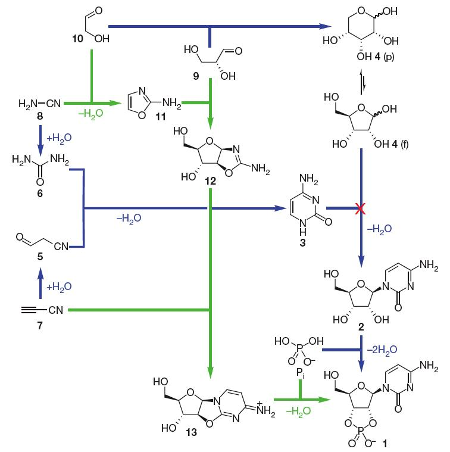
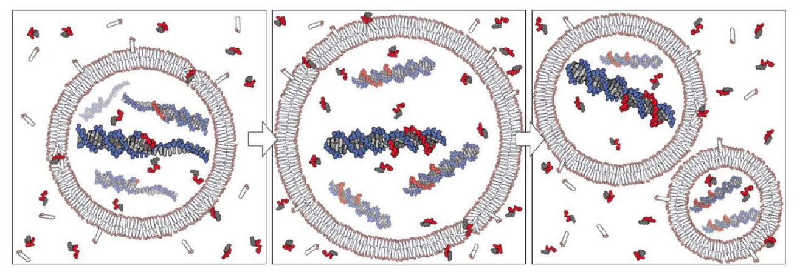
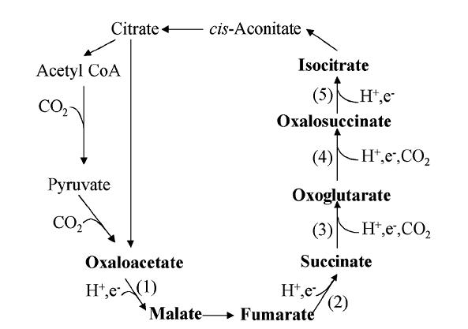

Ursprung des Lebens
Copyright 2010
[Veröffentlicht am 31. Oktober 2006]
Update vom 1. Juli 2010
Zusammenfassung
Selbst die einfachsten derzeit lebenden Zellen enthalten Hunderte von Proteinen, von denen die meisten für ihre Funktion unerlässlich sind. Dennoch konnte eine solche Komplexität nicht am Ursprung des Lebens vorhanden gewesen sein. Basierend auf Forschung in diesem Bereich wird hier vorgeschlagen, wie, sobald eine sich selbst replizierende genetische Molekül existierte, das Leben hätte beginnen können und die schrittweise Evolution der Komplexität ermöglicht wurde im Gegensatz zum plötzlichen Auftreten der Komplexität, das Kreationisten als notwendig am Anfang des Lebens behaupten. Die Bedingungen für die Synthese organischer Moleküle auf der frühen Erde werden überprüft, und Modelle, die zuerst Gene und Modelle, die zuerst den Stoffwechsel betreffen, werden diskutiert. Während die Herkunft der Homochiralität von Aminosäuren und Zuckern seit Jahrzehnten ein rätselhaftes Problem darstellt, bieten jüngste Befunde plausible Erklärungen.
Andere Links:
|
Inhalt
- Einleitung
- Bedingungen für die Synthese organischer Moleküle auf der frühen Erde
- Eine RNA-Welt zuerst?
- Allmählicher Aufbau von Komplexität
- Mineralien und der Ursprung des Lebens
- Spezifität chemischer Reaktionen und das „Metabolismus-zuerst"-Szenario
- Ursprung der Homochiralität von Aminosäuren und Zuckern
- Hyperzyklen
- Ausblick
- Anmerkungen
- Literatur
Die Wissenschaft zeigt uns, dass das Universum durch die Selbstorganisation der Materie zu immer komplexeren Strukturen evolvierte. Atome, Sterne und Galaxien haben sich aus den fundamentalen Teilchen, die vom Urknall erzeugt wurden, selbst zusammengefügt. In den ersten Sternen wurden schwerere Elemente wie Kohlenstoff, Stickstoff und Sauerstoff gebildet. Alternde Sterne der ersten Generation schleuderten diese dann ins Weltall – wir, die aus diesen Elementen bestehen, sind buchstäblich aus Sternenstaub geboren. Die schwersten Elemente entstanden in den Explosionen von Supernovae. Die Schwerkraft ermöglichte im Anschluss die Bildung neuer Sterne und von Planeten. Schließlich entstanden im Prozess der biologischen Evolution von bakterienähnlichen winzigen Zellen (der letzte universelle gemeinsame Vorfahr, Abk. LUCA) bis zu allen Lebewesen auf der Erde, einschließlich uns Menschen, komplexe Lebensformen aus einfacheren.
Bei der Betrachtung dieser Selbstorganisation materieller Strukturen im Bereich der Philosophie kann man schließen, dass dies entweder deshalb geschieht, weil die zugrundeliegenden Naturgesetze, die außerordentlich speziell sein müssen, um dies zu ermöglichen (Rees 2001, Smolin 1999, Susskind 2006), einfach so sind, wie sie sind (möglicherweise im Kontext eines Multiversums), oder weil sie von Gott für diesen Zweck entworfen wurden. Da wir wissen, dass die Naturgesetze so selbstgenügsam sind, dass auf ihrer Grundlage die Komplexität des gesamten physikalischen Universums aus fundamentalen Teilchen entstand und weiter, dass sich im Laufe der biologischen Evolution komplexe Lebensformen aus einfacheren entwickelten, können wir vernünftigerweise extrapolieren, dass sie auch die spontane Entstehung des Lebens selbst durch chemische Evolution geeigneter Strukturen ermöglichen würden, unabhängig davon, ob wir glauben, dass diese Gesetze entworfen oder nicht entworfen sind. Daher sollten wir von sowohl theistischen als auch atheistischen philosophischen Perspektiven aus eine natürliche Entstehung des Lebens erwarten.
Die experimentelle Erforschung des Ursprungs des Lebens wurde mit Millers präbiotischem Suppenexperiment (Miller 1953, Miller-Urey-Experiment) eingeleitet, das Aminosäuren erzeugte, die für das Leben essenziell sind. In den folgenden Jahrzehnten wurde viel beeindruckende Chemie an den Bausteinen des Lebens durchgeführt, doch für eine lange Zeit blieben viele entscheidende Fragen ohne experimentelle Antworten, die Hoffnung auf feste zukünftige Richtungen geben könnten. Dazu gehörten die Synthese von Nukleotiden, die Polymerisation von Nukleotiden zu Oligonukleotiden, die Einbindung eines sich selbst kopierenden Gens in einfache Zellen, auf die die natürliche Selektion wirken kann, und der Ursprung der Homochiralität von Aminosäuren und Zuckern. Konzeptuell stellte die Entstehung des Protein-Translationssystems ein fundamentales Problem dar. Dennoch wurde in den letzten Jahrzehnten in all diesen Bereichen bedeutender Fortschritt erzielt, auch wenn die Details immer noch lückenhaft sind und Probleme bei vielen Fragen bestehen bleiben. Auch vorgeschlagene Reaktionen im „Metabolismus-zuerst"-Modell, das den Metabolismus, nicht die Gene, am Ursprung des Leben annimmt, wurden durch jüngste Erkenntnisse vielversprechender. Insgesamt kann gesagt werden, dass die Puzzleteile beginnen, sich so zusammenzufügen, dass die wissenschaftliche Annahme eines spontanen Ursprungs des Lebens aus unbelebter Materie schließlich auf der Ebene experimenteller Evidenz Plausibilität erlangt hat.
Zwar erscheint die Forschung auf diesem Gebiet heute vielversprechender als vor nur einem Jahrzehnt, doch ist die Wissenschaft vom Ursprung des Lebens im Vergleich zur Wissenschaft der biologischen Evolution nach wie vor erheblich weniger entwickelt in ihrer Erklärungskraft. Wie Richard Robinson feststellt (Robinson 2005): „Gebt Biologen eine Zelle, und sie geben euch die Welt zurück. Doch wie erklären Biologen jenseits der Annahme, dass die erste Zelle auf irgendeine Weise entstanden sein muss, ihr Entstehen aus der präbiotischen Welt vor vier Milliarden Jahren?"
Tatsächlich ist es das eine, dass wir alle chemischen Baustoffe des Lebens kennen und dass das Funktionieren des Lebens durch ihre Zusammenarbeit in einem extrem komplexen System vollständig erklärt werden kann. Doch es ist etwas ganz anderes, wie sie am Ursprung des Lebens schrittweise eine initiale Organisation von sich aus gebildet haben könnten (via welchen auch immer intermediären Prozessen und Bausteinen). Auf den ersten Blick mag die Evolution von LUCA, einem Vorläufer von Bakterien, bis hin zum Menschen im Vergleich wie Kinderspiel erscheinen: Sie begann mit einer bereits enorm komplexen, völlig autarken biochemischen Maschine und machte sie schrittweise einfach nur noch komplexer.
Man darf nicht aus den Augen verlieren, dass die am einfachsten zu verstehenden Zellen, die wir derzeit kennen und die nicht permanent von einem Wirtsstoffwechsel abhängig sind, das Bakterium Mycoplasma genitalium, 482 protein-kodierende Gene besitzen (die meisten Bakterien, wie E. coli, kodieren für mehr als 2000 verschiedene Proteine), von denen, laut dem bisher gründlichsten experimentellen Studium (Glass et al. 2006), die essentiellen 387 sind. Die wahrscheinlich genaueste hypothetische Studie (Gil et al. 2004) setzt die minimale Anzahl der Gene auf 206. Alle Proteine, die aus diesen Genen produziert werden, sind in einem Labyrinth von Stoffwechselwegen, Replikation sowie Aufbau und Wartung der Struktur involviert, was eine überwältigende Komplexität aufweist.
Tatsächlich, wie sollte sonst eine primitive Zelle durch eine derart geringe Menge an Komplexität die oben genannten grundlegenden Anforderungen erfüllen können? Wie könnte ein derart komplexes Netzwerk aus mehr als 200 Proteinen von selbst entstanden sein? Man könnte fragen: müsste es nicht auf einmal entstanden sein? Doch die Beweise deuten darauf hin, dass all diese Komplexität schrittweise von sehr einfachen Anfängen aus evolviert sein könnte.
2. Bedingungen für die Synthese organischer Moleküle auf der frühen Erde
Für den spontanen Ursprung des Lebens war die Verfügbarkeit organischer Moleküle als Bausteine von entscheidender Bedeutung. Das berühmte präbiotische Suppen-Experiment von Stanley Miller (Miller 1953, Miller-Urey-Experiment) hatte gezeigt, dass Aminosäuren, die Bausteine von Proteinen, unter anderem kleinen organischen Molekülen spontan durch die Reaktion einer Mischung aus Methan, Wasserstoff, Ammoniak und Wasser in einer Funkenentladungsvorrichtung entstanden. Diese Bedingungen sollten die der frühen Erde simulieren. Bereits 1922 hatte Oparin vorgeschlagen, dass die frühe Erde eine solche reduzierende Atmosphäre besaß (in seinem klassischen Werk „Der Ursprung des Lebens" von 1936 entwickelte er diese Ideen weiter). Beobachtungen von Jupiter und Saturn zeigten, dass sie Ammoniak und Methan enthielten, und es wurde angenommen, dass dort ebenfalls große Mengen an Wasserstoff vorhanden waren (heute ist bekannt, dass Wasserstoff der Hauptbestandteil der Atmosphäre dieser Planeten ist). Diese reduzierenden Atmosphären der Gasriesen galten als eingefangene Überreste der Sonnenebene, und die Atmosphäre der frühen Erde wurde durch Analogie als ähnlich angenommen.
Es wurde vorgeschlagen, dass nur in einer reduzierenden Atmosphäre wie dieser die Synthese organischer Moleküle, auch Zucker und organischer Basen, Bausteine von Nukleotiden, in großen Mengen möglich gewesen wäre (Chyba und Sagan 1992).
Spätere Forschung hat Zweifel an der Existenz einer reduzierenden Atmosphäre geäußert und stattdessen eine neutrale Atmosphäre vorgeschlagen; siehe auch (Chyba 2005), den begleitenden Artikel zu Tian et al. (siehe unten).
Allerdings deuten neue Berechnungen darauf hin, dass Wasserstoff aus der frühen Atmosphäre mit einer viel langsameren Rate entwichen ist als zuvor angenommen, was eine Atmosphäre ergab, in der Wasserstoff ein Hauptbestandteil war (etwa 30 %) und die daher stark reduzierend war (Tian et al. 2005, siehe auch Pressemitteilung). Die Autoren maßen die Produktion organischer Moleküle durch UV-Photolyse unter diesen Bedingungen und schlossen, dass bei 1010kg/Jahr die Rate um Größenordnungen höher gewesen wäre als die der Synthese organischer Verbindungen in hydrothermalen Systemen oder der exogene Lieferung organischer Verbindungen zur frühen Erde.
Eine weitere kürzlich durchgeführte Studie unterstützt ebenfalls eine frühe reduzierende Atmosphäre. Chondrite sind primitives Material aus der Sonnenecke und werden allgemein als Bausteine der Erde und anderer felsiger Planeten, Asteroiden und Monde angesehen. Während und nach der Planetenbildung entweichen Gase aus dem chondritischen Material aufgrund von hoher Temperatur und Druck. Systematische, detaillierte Berechnungen darüber, woraus diese Gase bestanden haben müssen, zeigen, dass es sich hauptsächlich um das stark reduzierende Wasserstoff, Methan und Ammoniak handelt – dieselben Gase wie in den Miller-Urey-Experimenten (Schaefer und Fegley 2007, siehe auch Pressemitteilung). Die Zusammensetzung der Gase variierte nur in moderatem Ausmaß mit der Temperatur und erwies sich als weitgehend unabhängig vom tatsächlichen Druck, unter dem die Gasentweichung stattgefunden haben könnte, was die Robustheit der Schlussfolgerungen zu unterstützen scheint.
Die Autoren erwähnen, dass festgestellt wurde, dass eine reduzierende Atmosphäre aus Methan und Ammoniak extrem anfällig für Zerstörung durch UV-Sonnenlicht ist (Kuhn und Atreya 1979, Kasting et al. 1983). Sie weisen jedoch auch darauf hin, dass jüngste Entwicklungen darauf hindeuten, dass eine reduzierende Atmosphäre stabiler ist als zuvor angenommen:
1) Es wurde festgestellt, dass der Wasserstoffverlust aus der Erdatmosphäre weniger effizient war als zuvor angenommen (Bezug auf die Studie von Tian et al. oben).
2) Beobachtungen der Atmosphäre von Titan, des Mondes von Saturn, der hauptsächlich aus Methan und Stickstoff besteht, zeigen, dass photochemisch erzeugte Kohlenwasserstoff-Aerosole eine Dunstschicht in der oberen Atmosphäre bilden, die die untere Atmosphäre vor photochemischer Zerstörung schützt. Eine solche Dunstschicht könnte sich auch auf der frühen Erde aus entgasstem Methan und Ammoniak gebildet haben (Zahnle 1986, Sagan und Chyba 1997, Pavlov et al. 2000).
Doch selbst wenn die frühe Erdatmosphäre neutral statt reduzierend gewesen wäre, deuten neue Daten darauf hin, dass auch unter diesen Umständen eine effiziente Aminosäuresynthese möglich gewesen wäre. Die Gruppe von Jeffrey Bada zeigte, dass im Gegensatz zu früheren Berichten unter geeigneten Bedingungen aus neutralen Gasgemischen signifikante Mengen an Aminosäuren entstehen (Cleaves et al. 2008). Die Pufferung mit Calciumcarbonat (ein häufiges Gesteinsmaterial) verhinderte die Absenkung des pH-Werts durch die im Entladungsgenerator für Funkenentladungen produzierten Nitrite und Nitrate und erhöhte die Ausbeute drastisch. Darüber hinaus verhinderte die Zugabe von Oxidationshemmern die oxidative Zersetzung der Aminosäuren durch Nitrite und Nitrate und steigerte die Ausbeute noch weiter. Oxidationshemmer wie Ferrionen könnten auf der frühen Erde im Überschuss gegenüber Nitrit/Nitrat vorhanden gewesen sein (Walker und Brimblecombe 1985). Die Gruppe von Bada analysierte zudem erneut Proben aus Millers Funkenexperimenten der 1950er Jahre, die wasserdampfreiche Vulkanausbrüche simulierten. Solche Ausbrüche hätten reduzierende Gase freigesetzt. In diesen Proben waren die Aminosäuren vielfältiger als im klassischen Miller-Experiment, und die Ausbeuten waren vergleichbar oder sogar höher, was darauf hindeutet, dass selbst wenn die Erdatmosphäre neutral gewesen wäre, eine lokalisierte präbiotische Synthese effektiv gewesen sein könnte (Johnson et al. 2008, siehe auch Nachricht).
Natürlich, wenn das Leben in Tiefsee-Hydrothermalquellen entstand (siehe unten), würde die Zusammensetzung der frühen Erdatmosphäre weitgehend irrelevant werden. In gewissem Maße gilt dies auch für organische Bausteine, die der Erde durch interplanetaren Staub und auf kohlenstoffhaltigen Meteoriten zugeführt wurden.
In einer reduzierenden Atmosphäre, die durch die oben diskutierten Erkenntnisse wahrscheinlich gemacht wird, könnte die Konzentration organischer Verbindungen im präbiotischen Ozean relativ hoch gewesen sein (De Duve und Miller 1991 sowie die dortigen Referenzen). Darüber hinaus könnte eine präbiotische Suppe lokal durch einfache Prozesse wie beispielsweise Verdunstung in Pfützen oder flachen Seen stark konzentriert worden sein, möglicherweise mit langfristigen Feucht-/Trocken-Zyklen. Bei der Bewertung aller chemischen Szenarien ist zu berücksichtigen, dass aufgrund ihrer Natur der Ursprung des Lebens ein sehr lokales Ereignis gewesen sein muss; dies ist auch für die Frage nach dem Ursprung der Homochiralität von Aminosäuren und Zuckern wichtig, siehe unten.
3. War es zuerst eine RNA-Welt?
Es ist nun weitgehend anerkannt, dass am Ursprung des Lebens das gegenwärtige DNA/(RNA)/Protein-System für genetische Informationen einerseits und Katalyse, Regulation sowie strukturelle Funktion andererseits noch nicht existierte. Es würde die Frage aufwerfen, was zuerst kam, Protein oder DNA? Protein-Katalyse ohne genetische Information, die es ermöglicht, erhalten und weitergegeben zu werden, ist langfristig nicht ausreichend, und DNA-Gen-Information ohne Katalyse, die für die Funktion des Lebens notwendig ist, wäre ebenfalls nutzlos.
Stattdessen wird angenommen, dass RNA als Vorläufer sowohl von Proteinen als auch von DNA diente, in dem Sinne, dass sie sowohl als Katalysator (wie Protein-Enzyme) als auch als Träger genetischer Information fungieren kann. Selbst in der modernen Zelle spielen Ribozyme (katalytische RNAs) weiterhin eine wichtige, wenn auch begrenzte Rolle. Im Ribosom wird die Synthese der Peptidketten von Proteinen aus RNA-Code durch Ribozyme bewerkstelligt. Sie katalysieren auch das Splicing von RNA.
Die Hypothese, dass eine sogenannte RNA-Welt in den frühen evolutionären Stufen des Lebens eine Rolle spielte, ist heute eine fast allgemein geteilte Ansicht (Joyce 2002, Orgel 2004, The RNA World 2006). Könnte diese RNA-Welt am ultimativen Ursprung des Lebens gestanden haben? Dies ist derzeit noch eine offene Frage. Das RNA-System könnte zu komplex sein, um ohne Synthese durch einen genetischen Vorläufer oder einen vorangehenden enzymfreien Stoffwechsel entstanden zu sein (Optionen, die weiter unten diskutiert werden). Dennoch gibt es trotz noch bestehender erheblicher Probleme nun gute Hinweise auf einfache, spontane Prozesse auf der frühen Erde sowohl für die Synthese von Nukleotiden als auch für deren Verkettung zu Oligonukleotiden.
Lange Zeit schien die Synthese von RNA-Monomeren unter präbiotischen Bedingungen ein fundamentales Problem zu sein, da die Kondensation von Zucker (Ribose) und Nukleobase (Purine und Pyrimidine) nicht funktioniert (Orgel, 2004). Die präbiotische Synthese von Purin-Ribonukleotiden ist immer noch unklar, doch kürzlich wurde ein Durchbruch bei der Synthese von Pyrimidin-Ribonukleotid-Monomeren erzielt (die Cytosin und Uracil enthalten). Es scheint nun im Prinzip gelöst, und zwar auf eine völlig unerwartete Weise. Die Studie der Gruppe von John Sutherland (Powner et al. 2009) zeigt, wie die Natur Pyrimidin-Ribonukleotid-Monomeren spontan aus präbiotisch plausiblen Molekülen zusammensetzen konnte, indem sie Zwischenprodukte nutzte, die Atome sowohl für den Zucker- als auch für den Basenteil der Ribonukleotide beisteuern und so einen Kondensationsschritt von Zucker und Base ganz vermeiden (Abb. 1). Siehe auch Nature News für die Auswirkungen dieser Erkenntnisse. Während ein guter Syntheseweg für Purin-Ribonukleotide (die Adenin und Guanin enthalten) noch gefunden werden muss, argumentiert Jack Szostak in einem Kommentar, der dem Artikel beiliegt (Szostak 2009), dass es genau deshalb, weil diese Arbeit so viele neue Forschungsrichtungen eröffnet, für Jahre als einer der großen Fortschritte in der präbiotischen Chemie gelten wird.

Abbildung 1. Pyrimidin-Ribonukleotid-Synthesewege. Früher angenommene Synthese von β-Ribocytidin-2,3-cyclischem Phosphat 1 (blau; beachten Sie das Scheitern des Schritts, in dem Cytosin 3 und Ribose 4 kondensieren sollen) und die erfolgreiche neue Synthese, die hier beschrieben wird (grün). p, Pyranose; f, Furanose. Nach (Powner et al. 2009). Nachdruck mit Genehmigung von Macmillan Publishers Ltd.
(5 = Cyanoacetaldehyd, 6 = Harnstoff 6, Cyanoacetylen 7, 8 = Cyanamid, 9 = Glyceraldehyd, 10 = Glykolaldehyd, 11 = 2-Amino-oxazol, 12 = Pentosen-Amino-oxazolin, Arabinose-Derivat, 13 = Anhydroarabinonukleosid)
Was die Verkettung von Nukleotiden zu Oligonukleotiden betrifft, gibt es ebenfalls Fortschritte. Die Polymerisierung von chemisch aktivierten RNA-Monomeren kann auf den Mineraloberflächen von Montmorillonit-Ton stattfinden und Polymerketten von bis zu 50-Meren erzeugen (Huang und Ferris 2006). Die Pyrimidin-Ribonukleotid-Monomere aus der neuen Synthese (Powner et al. 2009) sind ebenfalls aktiviert (sie enthalten zyklisches Phosphat), was eine ähnliche Polymerisierung ermöglichen könnte.
Die Gruppe von David Deamer hat gezeigt, dass die Synthese von RNA-ähnlichen Polymeren sogar aus nicht aktivierten Mononukleotiden innerhalb von Phospholipid-Vesikeln auftreten kann, aufgrund des chemischen Potenzials schwankender anhydrer und hydratisierter Bedingungen, wobei Wärme während der Rehydratation Aktivierungsenergie liefert (Rajamani et al. 2008). Solche Bedingungen könnten um heiße Quellen auf der präbiotischen Erde existiert haben. Die Lipide bieten zudem ein strukturell organisierendes Mikroumfeld, das Mononukleotiden Ordnung auferlegt. In diesem experimentellen Aufbau können Oligomere bis zu 100 Nukleotiden nicht-enzymatisch gebildet werden. Ob präbiotisch plausible Fettsäure-Vesikel denselben Effekt auf die RNA-Synthese haben könnten, bleibt abzuwarten (hierbei wäre eine sich selbst replizierende RNA-Molekül auch für die weitere Evolution vorverpackt worden, vgl. unten). Eine effektive Polymerisation von aktivierten Monomeren könnte ebenfalls durch ein strukturell organisierendes Mikroumfeld innerhalb von Vesikeln unterstützt werden.
Allerdings lösen diese Reaktionen, die RNA-ähnliche Polymere bilden, noch nicht das Problem der stereospezifischen 3-5-Konkatenation von Monomeren (Orgel 2004), die in allen lebenden Organismen vorkommt. Sowohl die lipid-assistierte Synthese als auch die Polymerisation auf Montmorillonit erzeugen Mischungen aus 2-5- und 3-5-Bindungen. Doch bei letzteren besteht eine Präferenz für 3-5-Bindungen (bis zu 74 %) , was vielversprechend ist. Die Autoren der Studie (Huang und Ferris 2006) argumentieren, dass ein höherer Anteil an 3-5-Verknüpfungen zu einer schnelleren Evolution hin zu allen 3-5-Phosphodiesterbindungen während der Replikation von Oligomeren geführt haben könnte, was darauf hindeutet, dass vielleicht eine vollständige 3-5-Spezifität der Bindungen innerhalb des ersten replizierenden RNA-Moleküls nicht erforderlich war. Dieses Szenario ist möglicherweise nicht unmöglich, da RNA im Allgemeinen unregelmäßigere Sekundärstrukturen bildet als DNA mit ihrer Doppelhelix, für die eine absolute stereospezifische Synthese zwingend ist. In der Studie ergaben verschiedene Arten der chemischen Aktivierung von RNA-Monomeren unterschiedliche Präferenzen für die 3-5-Konkatenation. Es bleibt abzuwarten, wie spezifisch die 3-5-Bindungskonkatenation von Monomeren aus der Aktivierung mit zyklischem Phosphat sein wird, die Art der Aktivierung, die in der neuen Synthese von Pyrimidin-Ribonukleotid-Monomeren (Powner et al. 2009) berichtet wurde.
Aufgrund der Schwierigkeiten bei der Synthese von RNA-Nukleotiden und Oligonukleotiden, die jedoch, wie es scheint, erheblich weniger schwerwiegend sind als vor nur wenigen Jahren, angesichts der neuen Erkenntnisse, wurden mehrere Alternativen zur RNA als erstes genetisches System vorgeschlagen, die diese möglicherweise vorausgingen. Peptidnukleinsäure (PNA), Threose-Nukleinsäure (TNA) und Peptide, in denen D- und L-Aminosäuren abwechseln und dabei Standard-Nukleinsäure-Basen (ANAs) einbeziehen, werden in (Orgel 2004) diskutiert. Ein noch einfacheres System ist Glycerolnukleinsäure (GNA, siehe Zhang et al. 2005). Eine hochinteressante und chemisch ansprechende, jedoch noch ungetestete Idee ist die PAH-Welt (PAH = polycyclische aromatische Kohlenwasserstoffe), entwickelt von S. Platts und beschrieben in (Hazen 2005) sowie auf Wikipedia und auf pahworld.com.
Weitere Schwierigkeiten bestehen darin, dass ein Ribozym (katalytische RNA), das sich vollständig selbst kopieren kann, bisher noch nicht gefunden wurde; ein 200 Basen langes Ribozym kann etwa 20 Basen seiner Sequenz mit hoher Treue kopieren (Zaher und Unrau 2007), eine Verbesserung gegenüber (Johnston et al. 2001). Eine Lösung für das Problem der Kopie einer langen Ribozym-Sequenz wurde in Szostak et al. (2001) vorgeschlagen; Experimente müssen zeigen, ob dies machbar ist. Auch das schwierige Problem, das doppelsträngige Produkt der Kopiereaktion zu trennen, um eine zweite Kopierrunde zu ermöglichen, bleibt zu lösen (Orgel 2004). Neue Befunde deuten darauf hin, dass dieses Problem durch thermisches Zyklieren gelöst werden könnte, analog zur Polymerase-Kettenreaktion (PCR), die unter plausiblen präbiotischen Bedingungen eine Möglichkeit gewesen sein könnte (Mansy und Szostak 2008, Baaske et al. 2007).
4. Allmählicher Aufbau von Komplexität
Nehmen wir das plausible Szenario an, dass entweder RNA direkt synthetisiert wurde, siehe oben, sodass aus einem großen Pool zufälliger RNA-Moleküle ein sich selbst replizierendes RNA-Molekül entstehen konnte, oder dass eine solche Synthese durch ein vorläufiges genetisches/katalytisches System bewirkt wurde (möglicherweise an der Oberfläche von Mineralien, vgl. Orgel 2004). Da Fettsäuren in der Umwelt verfügbar gewesen sein könnten (Hanczyc et al. 2003, Orgel 2004), könnte eine primitive Fettsäuremembran die ersten sich selbst replizierenden RNA-Moleküle umschlossen haben (aufgrund ihrer molekularen Eigenschaften können Fettsäuren spontan Vesikel bilden); dies hätte den Durchtritt der RNA-Polymere nicht erlaubt, sodass sie zusammengeblieben wären, aber die viel kleineren Nukleotide hätte durchgelassen, die aus spontaner präbiotischer Synthese oder aus einem vorläufigen genetischen/katalytischen System zugeführt wurden. Eine solche Membran hätte andere Eigenschaften der Semipermeabilität als moderne Lipidmembranen, bei denen ein großer Teil des Molekültransports durch Proteinkanäle reguliert wird.
Die Gruppe von Jack Szostak hat umfangreiche und plausible Studien durchgeführt, wonach diese Fettsäurevesikel als Behälter für RNA das Wachstum und die Replikation lediglich durch physiko-chemische Mechanismen ermöglicht hätten, bis eine ausgefeiltere Membranmaschinerie, die von der Zelle selbst gesteuert wird und mehr dem entspricht, was in heutigen Organismen zu finden ist, ihre Stelle eingenommen hätte (Hanczyc et al. 2003, Chen et al. 2004, Hanczyc und Szostak 2004, Zhu und Szostak 2009).
Während frühere Studien (Hanczyc et al. 2003, Hanczyc und Szostak 2004) extreme Bedingungen und reine Kräfte für die Vesikelteilung erforderten, was auch zum Verlust eines beträchtlichen Teils des Vesikelinhalts führte, zeigt eine neue Studie (Zhu und Szostak 2009) eine Lösung für diese Probleme. Sie verwendet multilamellare Vesikel (Vesikel mit mehreren Schichten einer Lipidmembran), die sich spontan durch die Wiederbefeuchtung von Fettsäurefilmen oder durch die Ansäuerung einer konzentrierten Lösung von Fettsäure-Mizellen bilden. Sobald multilamellare Vesikel gebildet sind, führt die spontane weitere Einlagerung von Fettsäure-Mizellen in diese, über einen unerwarteten Mechanismus, zur Bildung stark verlängert, fadenartiger Vesikel. Nach Einwirkung milder Scherkräfte teilen sie sich in mehrere, wiederum runde, kleine Tochtervesikel, die RNA-Inhalte gut bewahren.
Die Gruppe von Szostak hat zudem demonstriert, dass Nukleotide durch präbiotisch plausible Fettsäure-basierte Vesikel hindurchtreten können und dass die nicht-enzymatische Vorlage-Kopie eines Modell-Oligo dC-DNA-Vorlagenmoleküls innerhalb dieser Vesikel stattfinden kann (Mansy et al. 2008), was in Verbindung mit den Studien zur Vesikel-Wachstum und -Teilung grundsätzlich aufzeigt, wie ein heterotropher Protocell möglicherweise funktioniert haben könnte (Abb. 2). Darüber hinaus zeigten sie (Mansy und Szostak 2008), dass präbiotisch plausible Modellmembranen überraschend thermostabil sind und Temperaturen von bis zu 100C für mindestens kurze Zeiträume tolerieren können. Thermisches Zyklieren wäre möglicherweise in der Nähe oder innerhalb der Oberfläche von hydrothermalen Quellen oder heißen Quellen möglich gewesen (für thermische Konvektion innerhalb hydrothermaler Poren, siehe auch die unten genannte Studie von Baaske et al. 2007). Dies könnte das dornige Problem der Trennung des doppelsträngigen Produkts der Kopiereaktion für weitere Replikation lösen. Thermisches Zyklieren könnte eine Trennung der Kopieprodukte (und erhöhte Nukleotidaufnahme, siehe Mansy und Szostak 2008) bei hohen Temperaturen sowie die Kopie bei niedrigeren Temperaturen ermöglicht haben, analog zur PCR (Polymerase-Kettenreaktion).

Abbildung 2. Konzeptuelles Modell einer heterotrophen Protocell. Das Wachstum der Protocell-Membran ergibt sich aus der Einbindung von umweltlich bereitgestellten Amphiphilen, während die Teilung durch intrinsische oder extrinsische physikalische Kräfte angetrieben werden kann. Extern zugeführte aktivierte Nukleotide durchdringen die Protocell-Membran und dienen als Substrate für die Vervielfältigung interner Vorlagen. Die vollständige Replikation der Vorlage gefolgt von einer zufälligen Segregation des replizierten genetischen Materials führt zur Bildung von Tochter-Protocells. Nach (Mansy et al. 2008). Nachdruck mit Genehmigung von Macmillan Publishers Ltd.
Aus allen oben genannten Daten lässt sich extrapolieren, dass sich innerhalb von Fettsäurevesikeln das erste selbstreplizierende RNA-Molekül hätte kopieren können. Während der Kopierung wären verschiedene Dinge möglich gewesen. Hochtreue Kopien hätten das gleiche selbstreplizierende Molekül ergeben. Kopien mit Fehlern hätten in den meisten Fällen zu nicht-funktionalem RNA geführt, aber in einer Minderheit der Fälle könnten sie RNA ergeben haben, die sich schneller kopiert. Es wurde gezeigt (Chen et al. 2004, siehe auch Nachricht), dass RNA/Vesikel-Systeme, die mehr genetisches Material enthalten (was sich aus schnellerer RNA-Replikation ergeben hätte), mehr innere Spannung entwickeln als benachbarte Vesikel, die nicht so viel RNA enthalten, und Membranmaterial von ihnen aufnehmen. Wichtig ist, dass dies eine natürliche Selektion von Vesikeln durch Konkurrenz ermöglicht hätte, auch ohne die Fähigkeit, ihre eigenen Membranbestandteile zu synthetisieren und damit ihr eigenes Wachstum direkt zu steuern. Somit hätte ein System zum ersten Mal die Fähigkeit gehabt, sich durch Darwinische Evolution zu entwickeln, indem natürliche Selektion auf Variation wirkt. Dies wäre eine neue und entscheidende emergente Eigenschaft gewesen, die beim Übergang vom Nicht-Leben zum Leben entstanden wäre.
Ein kleiner Teil der anderen Kopierfehler (wiederum würden die meisten wesentlichen Fehler wahrscheinlich zu nicht-funktionalen Molekülen geführt haben, die jedoch durch natürliche Selektion herausgefiltert worden wären) könnte zu RNA-Molekülen mit weiteren, völlig anderen katalytischen Eigenschaften als der Kopierfunktion geführt haben. Eine neue Eigenschaft könnte es dem RNA/Vesikel-System ermöglicht haben, Ressourcen noch besser zu erschließen: genau wie im Fall der RNA-Moleküle mit der besseren Kopierfunktion hätte sich die RNA entwickelt (1). Die Kopierfunktion der Eltertmoleküle hätte wahrscheinlich auch auf diese Tochtermoleküle gewirkt (ähnlich einem RNA-Polymerase-Enzym, das jede RNA kopiert). RNA/Vesikel-Systeme, die neben der RNA mit der Kopierfunktion auch die veränderten RNA-Moleküle mit der neuen vorteilhaften Funktion besaßen, wären durch natürliche Selektion begünstigt worden. Schließlich könnten durch Wiederholung solcher Prozesse eine Reihe neuer katalytischer Eigenschaften dazu geführt haben, dass der RNA-Pool innerhalb der Vesikel begann, seine eigenen Nukleotide herzustellen. War es dann autark? Bis auf einen gewissen Grad, ja. Könnte dies die erste primitive Zelle gewesen sein? Warum nicht?
Es ist lediglich so, dass in diesem Szenario der anfängliche Stoffwechsel viel einfacher gewesen wäre als der heutige Stoffwechsel: Unter anderem könnte der Energiestoffwechsel durch den Transport aktivierter Bausteine für Moleküle von der äußeren Umgebung in die Vesikel ersetzt worden sein (in einem Sinne, der eine vorläufige Alternative zur modernen ATP-Produktion darstellt, was angesichts des einfachen Stoffwechsels möglich erscheint), und der Lipidstoffwechsel, die Bildung der Membranstruktur und ihre Regulation während der Replikation, wären durch einfache Vesikel ersetzt worden, die einfach physiko-chemischen Kräften gehorchen.
Mit anderen Worten: Die Zelle wäre stärker von der Außenwelt abhängig gewesen, doch aufgrund dessen, was sie tat, war sie in gewissem Maße autark (heutige Organismen benötigen natürlich ebenfalls Nahrung aus der Außenwelt in Form von Nährstoffen). Andererseits wäre die Abhängigkeit der Zelle von der Außenwelt auch auf direktere Weise möglich gewesen. Eine moderne Zelle kann beispielsweise Fettsäuren aus der Außenwelt nicht so verwenden, dass sie direkt als Membranelemente eingebaut werden.
Früher haben wir gefragt: Wie konnte ein komplexes Netzwerk von mehr als 200 essenziellen Proteinen, wie es in den heute elementarsten Zellen vorkommt, von selbst entstanden sein?
Der Schlüssel zur Beantwortung dieser Frage liegt in der Kombination der beiden oben genannten Eigenschaften in der primitiven Zelle: eine direktere Abhängigkeit von der Außenwelt als die moderne Zelle, aber auch eine größere Fähigkeit, diese Abhängigkeit durch die Annahme molekularer Bausteine als solche zu zeigen, ohne Nährstoffe in diese umwandeln zu müssen. Ausgehend von diesen Merkmalen und schrittweise weiterentwickelnd, könnte die Evolution tatsächlich das zelluläre System in eine größere Komplexität überführt haben.
Vielleicht könnte die Lipidsynthese in einer Vorform der modernen Synthese das System unabhängiger gemacht haben. Das RNA-System könnte, Stück für Stück, die Proteinsynthese erfunden haben, wie bereits erwähnt; die modernen Ribosomen enthalten nach wie vor Ribozyme (katalytische RNA), die die Bildung von Peptidbindungen katalysieren, die schließlich zu Proteinen führen. In einer überzeugenden Studie (Wolf und Koonin 2007) schlagen die Autoren ein schrittweises Modell für den Ursprung des Proteinsystem der Translation vor, bei dem jeder Schritt einen spezifischen Vorteil für eine Ansammlung von ko-evolvierenden genetischen Elementen bietet. Das Ziel der Entwicklung der Translation wäre nicht erforderlich gewesen, eine Voraussicht, die die Evolution nicht besitzt. Die ursprüngliche Ursache für das Auftreten der Translation wäre die Fähigkeit von Aminosäuren und Peptiden gewesen, Reaktionen zu stimulieren, die von Ribozymen katalysiert werden (für Peptide experimentell nachgewiesen, siehe Robertson et al. 2004). Selbst wenn sich herausstellen sollte, dass mehrere Schritte in der Evolution der Translation wahrscheinlich von dem vorgeschlagenen Modell abweichen, zeigt die Studie klar, dass es in der Entstehung des Translationssystems nichts gibt, was einen Fall von irreduzibler Komplexität darstellen würde, der nicht Gegenstand einer schrittweisen darwinistischen Evolution sein könnte.
Eine kürzlich durchgeführte Studie (Bokov und Steinberg 2009), die auf einer Analyse der gegenseitigen Abhängigkeit der Elemente des Makromoleküls basiert, zeigt eine schrittweise Evolution des Ribosoms auf der strukturellen Ebene, beginnend bei einem sehr kleinen Kern, dem Peptidtranspeptidationszentrum. Weitere Schichten wurden von außen her nacheinander hinzugefügt, bis das aktuelle komplexe Makromolekül entstand. Jede dieser Schichten ist strukturell nur mit der jeweiligen vorhergehenden verbunden und könnte im Modell entfernt werden, ohne die Integrität der inneren Schichten zu zerstören (ähnlich wie das Schälen einer Zwiebel), was zeigt, dass es nicht notwendig war, dass das gesamte Molekül auf einmal entstand. Dies begründet aus einer anderen Perspektive das Fehlen irreduzibler Komplexität der translativen Maschinerie.
Schließlich könnte ein komplexer Stoffwechsel erreicht und der Übergang zur modernen DNA/(RNA)/Protein-Welt vollzogen worden sein. Der Dualismus DNA/Protein ist selbst eine Quelle der Komplexität, die bei einem RNA-nur-Organismus fehlt.
Was ist mit dem schwierigen Problem eines Genoms, das alle Gene zusammenhält? Es könnte sein, dass in den ersten primitiven Zellen RNAs zufällig Schritt für Schritt, eins nach dem anderen, ligiert wurden, um einen Genom-Vorläufer zu bilden, und dass jeder solche Schritt einen Vorteil in der natürlichen Selektion gegenüber konkurrierenden Zellen bot, da Gene während der Zellteilung nicht mehr verloren gingen und die Replikation synchronisiert war. Im Laufe der Zeit könnte sich ein ganzes kleines RNA-Genom potenziell auf diese Weise organisiert haben, bis Mechanismen für die interne Expansion, wie sie in modernen Genomen vorkommen, übernommen wurden, z. B. Gen-Duplikation und Variation des duplizierten Gens.
Zweifellos, dass das Lesen einer Kette ligierter RNA als mehrere einzelne Gene vorausgesetzt hätte, dass der primitive zelluläre Mechanismus einen Weg gefunden hätte, den Anfang und das Ende einer Sequenz zu erkennen. Promotorregionen und Start-/Stop-Codons in der Form, wie sie in protein-kodierenden Genen verwendet werden, wären in einem primitiven RNA-Organismus nicht vorhanden gewesen.
Während mangelnde Replikationsgetreue bei primordialen RNA-Genomen ein Problem gewesen wäre, deuten Analysen experimenteller Mutationsstudien an Ribozymen darauf hin, dass ein RNA-Genom dennoch so groß wie 100 Gene gewachsen sein könnte (Kun et al. 2005, Poole 2006). Das RNA-Genom könnte Stück für Stück durch ein DNA-Genom ersetzt worden sein, ein selektierbarer Vorteil, den sich primordiale Zellen zufällig hätten verschaffen können.
Was den universellen genetischen Code betrifft: Es gibt Belege dafür, dass der genetische Code bis zum letzten gemeinsamen Vorfahren in erheblichem Maße zur Fehlerminimierung selektiert wurde und somit nicht willkürlich ist. Doch ist er zum Teil wahrscheinlich auch ein „eingefrorener Zufall", da die Selektion für dieses Merkmal nicht maximal erscheint (Koonin und Novozhilov 2009).
Zusammenfassend lässt sich auf Basis der verfügbaren Daten feststellen, dass ein spontaner Ursprung des Lebens als einfache Zellen, die ein einzelnes genetisches Polymer enthalten, auf das die natürliche Selektion wirken kann, machbar ist. Ein schrittweiser evolutionärer Übergang von diesen zu einer gemeinsamen zellulären Komplexität wäre möglich gewesen.
5. Mineralien und der Ursprung des Lebens
Mineralien liefern wahrscheinlich den Schlüssel zu einer Reihe von Fragen zum Ursprung des Lebens. Wie bereits diskutiert, wurde gezeigt, dass sie die Polymerisierung von Nukleotid-ähnlichen Molekülen katalysieren (Huang und Ferris 2006, Orgel 2004). Zudem wurde nachgewiesen, dass sie die präbiotische Synthese eines Nukleotidkomponenten in ausreichender Reinheit ermöglichen, die zuvor schwer zu erreichen war: Boratminerale stabilisieren Ribose (Ricardo et al. 2004, siehe auch Nachricht; für eine Synthese von Ribonukleotidmonomeren ohne Zuckerzwischenstufe siehe oben). Die Bildung von Fettsäurevesikeln wird ebenfalls durch Mineralien unterstützt, und Mineralpartikel könnten in Vesikel gelangt und dort katalytische Eigenschaften gezeigt haben (Hanczyc et al. 2003, Hanczyc et al. 2007).
In einem anderen hypothetischen Szenario spielen Mineralien ebenfalls eine interessante Rolle. Anstatt in einer wässrigen präbiotischen Suppe auf oder nahe der Erdoberfläche wurde angenommen, dass das Leben in den Tiefen des Ozeans, in der einzigartigen Umgebung von Tiefsee-Hydrothermalquellen, entstanden sein könnte. Es wurde gezeigt, dass relevante organische Moleküle in Reaktionen synthetisiert werden können, die Gase und Mineralien an diesen Standorten beinhalten, wobei CO und andere kleine kohlenstoffhaltige Moleküle als Kohlenstoffquelle dienen. Diese Reaktionen erfordern die hohen Temperaturen oder eine Kombination aus hohen Temperaturen und Drücken, wie sie in Tiefsee-Hydrothermalquellen vorkommen. Um einige Beispiele zu nennen: Die Reaktion von CH3SH mit CO in Gegenwart von FeS/NiS führt zu aktivierter Essigsäure oder eine Mischung aus H2S, FeS/NiS und CO (als alleiniger Kohlenstoffquelle) ergibt Essigsäure (Huber, Wchtershuser 1997). Pyruvat wird aus CO in Gegenwart von Nonylthiol und FeS gebildet (Cody et al. 2000). Alpha-Hydroxy- und Alpha-Aminosäuren werden aus CO, Cyanoliganden und Methylthiol-Liganden durch Katalyse durch Fe-Ni-Ausfällungen synthetisiert, in Gegenwart von Calcium- oder Magnesiumhydroxid (Huber, Wchtershuser 2006). Für Kritik der Bedingungen in dieser Studie sowie die Antwort siehe (Bada et al. 2007).
Darüber hinaus zeigen organische Moleküle, die in Hochdruck-, Hochtemperaturwasser wie es in Tiefsee-Hydrothermalquellen vorkommt, einmal gebildet wurde, ein Maß an (wenn auch nicht immer besonders spezifischer) chemischer Reaktivität, das in normalen wässrigen Umgebungen normalerweise nur durch Beschleunigung der Reaktionsraten durch Enzyme beobachtet wird (siehe dazu die Übersicht Hazen et al. 2002). Für die physiko-chemischen Eigenschaften von Hochdruck-, Hochtemperaturwasser siehe Basset M-P 2003 (unter diesen Bedingungen verhält sich Wasser eher wie ein apolares organisches Lösungsmittel). Die Katalyse durch Mineralien, wie sie in Tiefsee-Hydrothermalquellen vorhanden sind, verstärkt die Reaktionen organischer Moleküle in einer solchen wässrigen Umgebung weiter (2). Der Abbau synthetisierter organischer Moleküle unter diesen Hochtemperatur- und Hochdruckbedingungen kann ebenfalls durch Mineralien verhindert werden, zumindest wurde dies für Aminosäuren gezeigt (siehe Hazen et al. 2002). Fettsäuren, als Quelle für membranbildendes Material, könnten ebenfalls in Hydrothermalquellen synthetisiert worden sein (Orgel 2004).
Darüber hinaus gibt es auch hydrothermale Quellen, die nur warm bis mäßig heiß sind und halbpermeable Mikroumgebungen mit zellähnlichen Abmessungen (die eine Lipidmembran nachahmen), die Moleküle bei hohen Konzentrationen zurückhalten könnten. Dies würde eine mögliche Lösung für das Konzentrationsproblem bieten (Russell und Martin 2004, Robinson 2005). Es bleibt jedoch abzuwarten, auf welche Weise solche unbeweglichen Kompartimente die natürliche Selektion ermöglicht hätten, die bei Fettsäurevesikeln durch Wettbewerb um Membranmaterial (Chen et al. 2004) und andere Ressourcen möglich ist, wie hier diskutiert. Koonin und Martin (2005) schlagen vor, dass, wenn die mineralischen Mikrokompartimente eine bestimmte Porosität aufwiesen, wettbewerbsfähigere evolutionäre Einheiten andere durch bevorzugte Besetzung neuer, leerer Kompartimente verdrängen könnten, die durch Schwefelabscheidung an hydrothermalen Quellen kontinuierlich entstehen sollten. Dies wäre ein Vorläufer der Zellteilung gewesen. Die Alternative, die im Gegensatz zu diesem interessanten, aber noch hypothetischen Modell bereits umfangreiche experimentelle Unterstützung genießt, wäre natürlich die Teilung von Fettsäurevesikeln, die genetische Polymere enthalten, durch einfache physiko-chemische Kräfte gewesen, siehe oben. Die Autoren argumentieren ebenfalls (vgl. Martin und Russell 2003), dass mineralische Mikrokompartimente anstelle von Lipiden möglicherweise sogar als Zellmembran für ein so fortgeschrittenes Organismus wie LUCA gedient haben könnten, da dies ihrer Ansicht nach die einfachste Erklärung dafür ermöglicht, warum die Nachkommen von LUCA, Archaeen und Eubakterien, sehr unterschiedliche Lipidmembranen aufweisen, die erst später entstanden wären.
Hydrothermale Quellen könnten eine weitere Lösung für das Konzentrationsproblem der Schlüsselkomponenten im Ursprung des Lebens bieten. RNA-Monomere und Oligonukleotide könnten sich in hydrothermalen Porensystemen aufgrund eines Temperaturgefälles über die Pore hinweg stark angereichert haben (Baaske et al. 2007, siehe auch den begleitenden Kommentar, Koonin 2007). In einer einzelnen Pore wird eine bis zu 1000-fache Konzentration von Nukleotiden erreicht, und mehr als 108-fach in verketteten Poren (diese Poren sind bis zu millimetergroß und damit deutlich größer als die oben genannten Mikrokompartimente). Diese Anreicherung hängt nicht von adsorbierenden Oberflächen ab, die für Reaktionssequenzen einschränkend sein könnten. Die Arbeitsgruppe von Jack Szostak (Budin et al. 2009) zeigte, dass auch Fettsäuren in ähnlichen Systemen stark angereichert werden. Bei der Konzentration verdünnter Lösungen von sowohl DNA als auch Fettsäuren findet die Selbstassemblierung großer Vesikel mit eingeschlossener DNA in Bereichen der Kapillaren statt, in denen die kritische Aggregatkonzentration der Fettsäure überschritten wird.
Alle diese Konzentrationszenarien könnten nicht nur in Tiefsee-Hydrothermalquellen funktionieren, sondern auch in Hydrothermalsystemen, die in flachen Gewässern am Rand von Vulkanen vorkommen. Die thermische Konvektion innerhalb von Hydrothermalporen (Baaske et al. 2007) hätte zudem thermisches Zyklieren ermöglicht, um das doppelsträngige Produkt von RNA-Kopierungsreaktionen zu trennen.
Die Chemie in diesen Umgebungen könnte neue Möglichkeiten für die Synthese eines genetischen Polymers eröffnen, das vor der RNA liegt, oder der RNA selbst, die im Szenario „Gene zuerst" benötigt wird.
6. Spezifität chemischer Reaktionen und das „Metabolismus-zuerst"-Szenario
Einige erweitern die oben genannten Erkenntnisse von Tiefsee-Hydrothermalquellen auf eine Variante des „Metabolismus-zuerst"-Szenarios im Gegensatz zum oben beschriebenen „Gen-zuerst"-Szenario, eine Hypothese, die besagt, dass komplexe metabolische Zyklen sich unabhängig von einem genetischen System, das in der Lage ist, Polymer-Katalysatoren bereitzustellen, selbst organisieren könnten. Nach dieser Hypothese wäre nur durch einen solchen stabilen Metabolismus die Synthese von Nukleotiden und Oligonukleotiden, die für den Beginn der RNA-Welt notwendig sind, möglich gewesen; jedoch aufgrund der hier diskutierten jüngsten Erkenntnisse ist die spontane präbiotische RNA-Synthese nun viel wahrscheinlicher als, als diese Metabolismus-zuerst-Szenarien ursprünglich vorgeschlagen wurden.
In denselben Veröffentlichungen, in denen Günter Wächtershäuser die Synthese organischer Moleküle unter Bedingungen vorhergesagt hatte, wie sie in hydrothermalen Quellen anzutreffen sind – Vorhersagen, die experimentell bestätigt wurden (siehe oben), führte er auch ein metabolisches Modell ein (Wächtershäuser 1988, Wächtershäuser 1990). Diese erfinderische und detaillierte Hypothese integriert auf beeindruckende Weise eine Vielzahl von Beobachtungen im Bereich der Chemie. Sie schlägt vor, dass der Beginn des Lebens ein sogenanntes „flaches Leben" war, ein ausgeklügeltes zweidimensionales Metabolismus auf Mineraloberflächen in hydrothermalen Quellen des Tiefseebodens; dies löst auch das Verdünnungsproblem, indem es die gesamte Chemie auf die Oberfläche konzentriert. Zentrale Komponente dieser und anderer „Metabolismus-zuerst"-Hypothesen ist der reduktive Citratzyklus (umgekehrter Krebs-Zyklus), der einen Kernmechanismus zur Bereitstellung nützlicher Biomoleküle aus CO2 liefert (Morowitz et al. 2000, Smith und Morowitz 2004).
Allerdings würde das Aufrollen dieser und ähnlicher Szenarien (z. B. Smith und Morowitz 2004) eine überraschende Abwesenheit von Nebenreaktionen erfordern (während ein verbleibendes geringes Maß an Nebenreaktionen die evolutionäre Entwicklung begünstigen könnte). Es ist nicht leicht einzusehen, wie die außerordentlich hohe Spezifität chemischer Reaktionen, die für komplexe Reaktionsabläufe und den Stoffwechsel zur Funktionsfähigkeit des Lebens erforderlich sind, im Allgemeinen ohne katalytische Polymere mit einem dreidimensionalen Substrattaschen möglich wäre. Diese werden nur durch ein „Gene-First"-Szenario bereitgestellt. Leslie Orgel (Orgel 1998) kommentiert die Frage wie folgt (für eine erweiterte Kritik siehe Orgel 2000):
Es besteht keine Einigung darüber, inwieweit der Stoffwechsel unabhängig von einem genetischen Material entstehen könnte. Nach meiner Meinung gibt es in der bekannten Chemie keine Grundlage für die Annahme, dass lange Reaktionssequenzen sich spontan organisieren können, und jeder Grund zu glauben, dass dies nicht der Fall ist. Das Problem, ausreichende Spezifität zu erreichen, sei es in wässriger Lösung oder auf der Oberfläche eines Minerals (3), ist so gravierend, dass die Wahrscheinlichkeit, einen Reaktionszyklus so komplexen wie den umgekehrten Citratzyklus zu schließen, vernachlässigbar ist. Ich glaube, dass dies auch für einfachere Zyklen mit kleinen Molekülen gilt, die für den Ursprung des Lebens relevant sein könnten, sowie für peptidbasierte Zyklen.
Daher erscheint es vernünftig anzunehmen, dass die Entwicklung von Stoffwechselzyklen und -wegen genetische/katalytische Polymere erfordert hätte, auch wenn die Meinungen zu diesem Thema offensichtlich geteilt sind.
Stuart Kauffmans große autokatalytische Mengen (Kauffman 1993) könnten aus demselben Grund zu optimistisch sein. Autokatalytische Mengen haben möglicherweise eine bessere Chance, realisiert zu werden, wenn sie klein sind.
Neuere Entwicklungen könnten jedoch die Möglichkeit aufwerfen, dass das „Metabolismus-zuerst"-Szenario doch realistisch ist. Es wurde festgestellt (Zhang und Martin 2006), dass drei der fünf reduktiven Schritte des umgekehrten Krebszyklus (Abb. 3) durch ZnS-Partikel angetrieben werden können (die reduzierende Kraft von Leitungsbahnelektronen bereitstellend und vermutlich in den Gewässern der frühen Erde weit verbreitet gewesen zu sein), unter dem Einfluss von UV-Licht. Die Umwandlungen von Oxalacetat zu Malat und von Fumarat zu Succinat verliefen mit erstaunlichen Ausbeuten (75 % bzw. 95 %), die möglicherweise nahe an der erforderlichen Schwelle liegen. Auch die Umwandlung von Succinat zu Oxoglutarat erfolgte, wenn auch mit einer niedrigen Rate von 2,5 %. Die Autoren schlagen vor, dass eine komplexere Mineralassemblage als nur ZnS die gesamte Reihe von Reaktionen antreiben könnte.

Abbildung 3. Umgekehrter Krebs-Zyklus. Hervorgehoben sind die fünf Reduktionsreaktionen (mit den Nummern 1-5 gekennzeichnet). Nach (Zhang und Martin 2006). Nachdruck mit Genehmigung. Copyright 2006 American Chemical Society.
Von hohem Interesse sind auch jüngste Erkenntnisse, die berichtet wurden (Robinson 2005), um Anhängern des Stoffwechsel-zuerst-Modells Hoffnung zu geben. Es wurde gezeigt (Cordova et al. 2005a) , dass solche einfachen organischen Moleküle wie einzelne Aminosäuren die stereospezifische Synthese von Zuckern aus einfachen Ausgangsstoffen mit enzymähnlicher Spezifität katalysieren können, albeit nur in organischen Lösungsmitteln. Zum Beispiel können entweder L- oder D-Enantiomere bestimmter Aminosäuren (wobei Serin darunter fällt, siehe unten) die Bildung einer bestimmten Art von Zucker nicht nur mit ausgezeichneter Chemoselektivität (d. h. Vermeidung unerwünschter Nebenreaktionen), sondern auch die Bildung eines von 16 möglichen Enantiomeren dieses Zuckers mit ca. 99 % Stereospezifität auslösen. Diese Reaktionen basieren auf dem Prinzip der asymmetrischen Organokatalyse, das in den 1970er Jahren entdeckt wurde (Eder et al. 1971, Hajos und Parrish 1974).
Noch vielversprechender sind die Ergebnisse einer Folgestudie (Cordova et al. 2006). Hier berichten die Autoren, dass kleine Peptide (hauptsächlich getestete Dipeptide oder Peptide mit nicht mehr als fünf Aminosäuren) (4) und Aminosäure-Tetrazole Aldol-Reaktionen katalysieren können, wobei einige davon Zucker mit großer Stereospezifität in Wasser bilden, nicht nur in organischen Lösungsmitteln.
Könnte eine hochspezifische Katalyse durch Aminosäuren oder andere kleine organische Moleküle (5) allgemein, d. h. nicht nur in dieser speziellen Reaktion, in gewissem Maße die dreidimensionalen Substrattaschen katalytischer Polymere ersetzen? Könnte sie Stoffwechselkreisläufe schließen?
Diese spekulativen Möglichkeiten, die eine spezifische Katalyse durch organische Moleküle beinhalten, näherten sich dem Szenario des „Metabolismus zuerst", das von Christian De Duve (De Duve 1995) vorgeschlagen wurde. Er geht von einem Protometabolismus aus, der eine Thioester-Welt umfasst und auch Energie für molekulare Reaktionen bereitstellt, die zur Entstehung der RNA-Welt werden würden (dieses Szenario wurde für die präbiotische Suppe vorgeschlagen, nicht für die Chemie in hydrothermalen Quellen). De Duve stützt seine Katalyse jedoch auf Multimere, die aus Thioestern abgeleitet sind und strukturell den ersten kleinen katalytischen Proteinen ähneln. Es ist schwer vorstellbar, wie solche relativ großen komplexen katalytischen Einheiten sich in einer spontanen Weise ständig mit hoher Reproduzierbarkeit hätten bilden können. Eine solche Reproduzierbarkeit wäre für die Etablierung und Aufrechterhaltung eines stabilen Metabolismus erforderlich; ansonsten stellen komplexe Reaktionsabläufe natürlich kein Problem dar für genetische Polymere, wie sie vom „Gen-zuerst"-Szenario bereitgestellt werden. Dennoch wäre die Reproduzierbarkeit (und die Häufigkeit) der gen-freien Synthese mutmaßlicher kleiner Molekül-Katalysatoren wahrscheinlich ein viel geringeres Problem gewesen.
Könnte die einzigartige Hochdruck-, Hochtemperatur-Wasserumgebung von Tiefsee-Hydrothermalquellen, die drastische Änderungen in der Reaktivität organischer Verbindungen bewirkt (siehe oben), auch dazu führen, dass kleine organische Moleküle als spezifische Katalysatoren wirken, die diese Funktion in normaler wässriger Lösung nicht erfüllen würden?
Schließlich, um das Haupträtsel des „Gene-First"-Modells zu lösen: könnte Katalyse durch kleine organische Moleküle sogar an der Synthese von Nukleotiden und Oligonukleotiden in Form der richtigen Stereoisomere beteiligt sein – eine weit komplexere Chemie als nur die Synthese von Zuckern – in Abwesenheit von vorläufigen genetischen/katalytischen Polymeren?
Zukünftige Forschung kann uns möglicherweise über all diese Fragen aufklären.
Es ist zu beachten, dass die Abhängigkeit von UV-Licht für die beschriebenen Reaktionen des reduktiven Citratzyklus (Zhang und Martin 2006), möglicherweise in Verbindung mit einer Anforderung für moderate Temperaturen, unter denen diese Reaktionen ablaufen sollen, diese Chemie auf die Erdoberfläche beschränken würde. Wie Leslie Orgel feststellt (Orgel 2006), haben Befürworter des „Metabolism-First"-Ansatzes historisch meist die Synthese in hydrothermalen Tiefseesprüngen und Befürworter des „Gene-First"-Ansatzes eine präbiotische Suppe auf der Erdoberfläche vertreten; jedoch ist weder dieser Zusammenhang eine a priori-Voraussetzung für das jeweilige Modell. Der Stoffwechsel ohne Gene könnte sich auf der Erdoberfläche entwickelt haben, oder Gene ohne vorherigen Stoffwechsel in hydrothermalen Tiefseesprüngen.
Andererseits, während sowohl diese Reaktionen des reduktiven Citratzyklus als auch die neue Synthese von aktivierten Pyrimidin-Ribonukleotid-Monomeren (Powner et al. 2009) reportedly UV-Licht benötigen, können Reaktionen, die scheinbar auf einen Ort beschränkt sind, gezeigt werden, dass sie mit fortschreitendem Wissen auch unter anderen Bedingungen an anderen Orten ablaufen. Die Synthese von RNA-Monomeren in hydrothermalen Systemen könnte ein attraktives Szenario sein, da, wie oben diskutiert, hydrothermale Poren eine große Anhäufung von RNA-Monomeren und Oligomeren durch thermische Gradienten über sie hinweg ermöglichen würden (Baaske et al. 2007).
7. Ursprung der Homochiralität von Aminosäuren und Zuckern
Leben synthetisiert fast ausschließlich L-Aminosäuren und D-Zucker. Eine Schlüsselfrage im Zusammenhang mit dem Ursprung des Lebens ist die Entstehung dieser Homochiralität (Einhandigkeit). Homochiralität ist für die Funktion von Proteinen als Aminosäure-Polymere unerlässlich und für die Struktur von DNA und RNA, die die Einbindung von D-Zuckern erfordert.
Wie entstand diese Homochiralität von Aminosäuren und Zuckern? Es ist eine Frage, die Forscher zum Ursprung des Lebens seit Jahrzehnten beschäftigt, doch eine Reihe neuerer Erkenntnisse löst das Problem erstaunlich gut.
Enantiomere (L- oder D-Formen) von Aminosäuren können durch zwei Schritte stark angereichert werden:
1. Eine anfängliche Ungleichverteilung der enantiomeren Formen einer Aminosäure
Wie konnte eine größere Präsenz einer enantiomeren Form einer Aminosäure gegenüber der anderen (enantiomere Überschuss, abgekürzt: ee), sei sie noch so geringfügig, überhaupt entstehen? Schließlich führt die typische Synthese einer Aminosäure im Labor zu einem exakten 1:1-Verhältnis der L- und D-Enantiomere – einer racemischen Mischung.
Eine mögliche Quelle sind Meteoriten. Beim Murchison-Meteoriten, einem gut untersuchten Beispiel, wurde berichtet, dass die L-Form einiger der gefundenen Aminosäuren bis zu 9 % ee (Cronin und Pizzarello 1997) aufweist. Diese ee könnten durch zirkular polarisiertes UV-Licht induziert worden sein (Bailey et al. 1998). Eine kürzlich durchgeführte Studie (Glavin und Dworkin 2009) berichtet von ee-Werten von L-Isovalin von mehr als 18 % auf dem Murchison-Meteoriten und postuliert als Ursache eine wässrige Alteration (ein Prozess, bei dem Veränderungen an Mineralien unter dem Einfluss von Wasser auftreten). Aminosäuren wie Isovalin, die auf der terrestrischen Biosphäre nicht häufig vorkommen, könnten Chiralität auf biogene Verbindungen als Katalysatoren in chemischen Reaktionen übertragen haben (Pizzarello und Weber 2004).
Doch während die chemische Evolution des frühen Lebens sehr wohl auf meteoritischem Material aufbauen konnte, könnten Quellen für geringe oder sogar ausgeprägte enantiomere Überschüsse von Aminosäuren an zahlreichen Orten auf der präbiotischen Erde entstanden sein.
Robert Hazen und Kollegen stellten fest (Hazen et al. 2001) , dass Kristalle des häufigen Gesteinsbildners Calcit (CaCO3) D- oder L-Formen von Asparaginsäure (und in vorläufigen Experimenten auch D- oder L-Formen von Alanin) bevorzugt adsorbieren können, abhängig von der Chiralität der Kristalloberfläche. Die durchschnittliche ee betrug einige Prozentpunkte. In ähnlicher Weise ergab die Adsorption von 3-Carboxyadipinsäure, einem präbiotisch relevanten Molekül, an Calcit- oder Feldspatkristallen ee-Werte von bis zu 10 % (Castro-Puyana et al. 2008).
Obwohl solche geringen lokalen enantiomerenexzesse ausreichen könnten, um Ereignisse auszulösen, die sie stark verstärken können (siehe unten), fand eine weitere Studie deutlich größere Präferenzen für die Adsorption von Aminosäuren an Mineraloberflächen (Wedyan und Preston 2005). Während in ihrer Studie Quarz, Kaolin und Montmorillonit leichte Präferenzen für die Adsorption von Enantiomeren zeigten, wiesen gewöhnliche Sedimente aus Ästuaren eine starke Selektivität auf. Typische D/L-Verhältnisse wichen enorm von 1 ab und erreichten in ihren extremsten Fällen bis zu 100 für Serin. Die Sedimente wurden verascht, um organische Substanzen zu entfernen, die eine chirale Verzerrung einführen könnten. Die Autoren sind vorsichtig: Die Möglichkeit, dass der Veraschungsprozess tatsächlich die Mineraloberfläche ätzt und aktiviert, während natürliches (chirales?) organisches Material verbrannt wird, darf nicht ausgeschlossen werden. Dennoch stellen sie fest, dass es bemerkenswert ist, dass eine derart starke Selektivität überhaupt auftritt.
Ein völlig anderes, attraktives Mechanismus zur Erreichung eines enantiomeren Überschusses wurde berichtet (Kojo et al. 2004), der die Bildung einer festen Phase aus Aminosäurekristallen beinhaltet. Dies könnte sehr wohl in einer präbiotischen Landschaft durch Abkühlung einer warmen, konzentrierten wässrigen Lösung von Aminosäuren oder einfach durch langsame Verdunstung einer Lösung stattgefunden haben. Die meisten racemischen Aminosäuren bilden Kristalle, die ebenfalls racemisch sind. Allerdings, wenn racemisches D, L-Asparagin Kristalle bildet, sind diese nicht racemisch, sondern zeigen unterschiedliche Grade eines Überschusses entweder des L-Enantiomers oder des D-Enantiomers. Wenn andere Aminosäuren vorhanden sind, kristallisiert entweder ihre L- oder ihre D-Form bevorzugt mit der enantiomeren Form (L oder D) des Asparagins mit, die während der Bildung des jeweiligen Kristalls einen Überschuss bewirkt.
Das Verhalten der Aminosäuren in der Studie zeigte eine große Konsistenz. Wenn in einem Kristall eine Tendenz zu L-Asparagin bestand, zeigten praktisch alle anderen 12 mitkristallisierten Aminosäuren ebenfalls eine Tendenz zur L-Form. Der Grad der Tendenz zu L-Asparagin variierte zwischen den Kristallen; wenn die Tendenz ausgeprägter war, war auch die Tendenz zur L-Form bei den anderen Aminosäuren ausgeprägter. Die beobachteten ees konnten sehr hoch sein. Wenn in einem weiteren Kristall eine Tendenz zur D-Form von Asparagin bestand, zeigten die anderen mitkristallisierten Aminosäuren ebenfalls eine Tendenz zu ihrem D-Enantiomer.
Natürlich war das gesamte enantiomere Gleichgewicht der gesamten Aminosäuremischung (die Summe aller Kristalle und der darüber befindlichen flüssigen Phase) immer noch racemisch. Wenn jedoch solche Kristalle aus einer Lösung auf der präbiotischen Erde gebildet wurden und einige dieser Kristalle dann physisch von anderen getrennt wurden, was durch viele gewöhnliche Prozesse geschehen sein könnte, und später wieder aufgelöst wurden, hätten die Aminosäuren in der Lösung automatisch eine ee aufgewiesen. Je nach dem spezifischen Kristall, von dem die Lösung abstammte, könnte diese ee hoch gewesen sein.
Ein anderer Weg, um enantiomerenüberschuss innerhalb eines Racemats zu erreichen, sind spezielle Kristallisationsbedingungen weit vom Gleichgewicht entfernt. Normalerweise bilden Asparaginsäure und Glutaminsäure racemische Kristalle. Doch wenn sie einer Kapillaraufsteigung durch ein poröses Material (wie einen teilweise in eine Lösung eingetauchten Ziegelstein) ausgesetzt werden, die mit einer Übersättigung aufgrund der Verdunstung der Lösung durch die poröse Struktur einhergeht, entstehen reine L- oder D-Kristalle (Viedma 2001). Ähnliche Bedingungen könnten auf der frühen Erde in sedimentären Umgebungen, wie in einer Playa oder einem Sandbarrier, vorhanden gewesen sein.
2. Verstärkung des Enantiomerenüberschusses durch Feststoff-Flüssigphasengleichgewichte
Studien haben gezeigt, dass, sobald ein anfänglicher Überschuss eines Enantiomers in einer Mischung von Aminosäuren vorhanden ist, selbst wenn dieser nur sehr gering ist, er enorme Auswirkungen haben kann. Dieser Effekt kann auftreten, wenn feste und gelöste Aminosäuren aus einer solchen Mischung im Gleichgewicht koexistieren, d. h. wenn Kristalle sich beispielsweise durch begrenzte Verdunstung einer Lösung bilden.
Eine detaillierte Studie wurde von der Gruppe von Donna Blackmond (Klussmann et al. 2006) durchgeführt. Wenn eine Mischung aus L- und D-Enantiomeren einer Aminosäure einen Überschuss an einem Enantiomer aufweist, besteht in den meisten Fällen das Gleichgewicht aus fester und gelöster Aminosäure aus folgenden zwei oder drei Komponenten:
a) racemische Kristalle (Kristalle mit einem 1:1-Verhältnis der L- und D-Enantiomere, ohne enantiomerenüberschuss in irgendeiner Richtung)
b) reine Kristalle des überschüssigen Enantiomers
(Oder nur eine dieser beiden festen Phasen vorhanden ist, oder beide koexistieren, hängt vom gesamten ee ab.)
c) eine Aminosäurelösung im Gleichgewicht mit der festen Phase(n), die ebenfalls einen bestimmten ee aufweist.
Doch wie sich herausstellt, ist für mehrere Aminosäuren die ee in Lösung viel höher als die gesamte ee der Mischung (das feste Material, dominiert von racemischen Kristallen, zeigt daher entsprechend weniger ee). Im extremsten Fall liefert Serin eine fast enantiopure Lösung (> 99 % ee) in Wasser aus einem nahezu racemischen Probenmaterial (nur etwa 1 % ee) unter Bedingungen des Feststoff-Flüssig-Gleichgewichts.
Eine kleinere, unabhängig durchgeführte Studie zur gleichen Zeit berichtet über ähnliche Ergebnisse (Breslow, Levine 2006). Die langsame Verdunstung einer wässrigen Lösung von Phenylalanin mit nur 1 % ee des L-Enantiomers führte zu einer Lösung dieser Aminosäure mit 40 % ee des L-Enantiomers über festem Material. Wenn eine solche Lösung daraufhin verdunsten durfte, hatte die resultierende Lösung im Gleichgewicht mit dem festen Material eine 90 % ee.
In einer neueren Studie erweiterte die Gruppe von Blackmond (Klussmann et al. 2007) das Konzept auf Mischungen von Aminosäuren mit anderen Verbindungen, die mit den Aminosäuren ko-kristallisieren können. Sie zeigten, dass diese Verbindungen durch Beeinflussung der Löslichkeit in einigen Fällen die ee in Lösung unter Bedingungen des Feststoff-Flüssig-Gleichgewichts stark beeinflussen können. Zum Beispiel wurde unter diesen Bedingungen die ee von Valin in Anwesenheit von Fumarsäure von 47 % auf bis zu 99 % erhöht. Beachten Sie, dass die präbiotische Plausibilität in diesem Szenario erhöht wird, da es Mischungen von Verbindungen statt reiner Komponenten verwendet.
Ein anderer Weg, um die ee zu erhöhen, verwendet keine Anreicherung der ee in Lösung, sondern in der Festphase eines Feststoff-Flüssigkeits-Gleichgewichts. Ein kurioser Mechanismus des Kristallwachstums, der eine Abnutzung durch Mahlen beinhaltet, ermöglicht die Entstehung eines einzelnen chiralen Zustands in der Festphase aus einer anfänglichen kleinen Ungleichgewichtung in der Kristallzusammensetzung von nur 2-3 % ee (Noorduin et al. 2008). Dies erfordert jedoch eine Racemisierung des Verbindungsstoffs in Lösung und wurde auf eine Aminosäurederivat angewendet, das bei Zugabe von Base diese Racemisierung durchläuft. Eine theoretische Erklärung, die sich von der im Studium gegebenen unterscheidet, wird in einem Kommentar zu den Ergebnissen diskutiert (McBride und Tully 2008). In einer Folgestudie wurden die Ergebnisse auf eine echte Aminosäure, Asparaginsäure, ausgedehnt (Viedma et al. 2008). Die Racemisierung in Lösung wurde mit katalytischem Salicylaldehyd in saurem Medium erreicht, und bis zu 99 % ee in Kristallen wurden aus einer anfänglichen Ungleichgewichtung von weniger als 10 % ee gewonnen. Erhitzen könnte mechanischem Mahlen substituiert werden.
In den Studien von Klussmann et al. 2006 und von Breslow, Levine 2006 werden die Ergebnisse auch im Hinblick auf die Aminosäure-katalysierte Aldolreaktion diskutiert, die die Zuckersynthese umfasst und möglicherweise zu enantiopuren D-Zuckern führen könnte; siehe auch die oben besprochenen Ergebnisse von Cordova et al. 2005a und Cordova et al. 2006. Wenn jedoch der neue Syntheseweg für aktivierte Pyrimidin-Ribonukleotid-Monomere (Powner et al. 2009) betrachtet wird, der die Basen- und Zuckermoleküle sowie deren Kondensation umgeht, sondern stattdessen die Endmoleküle über Zwischenprodukte erzeugt, die Atome sowohl für den Zucker- als auch für den Basenteil der Ribonukleotide beitragen, ist die Relevanz der Aminosäure-katalysierten D-Zuckerproduktion oder eines sonstigen potenziellen Einflusses enantiomerisch angereicherter Aminosäuren auf die Nukleotidsynthese nicht klar. Da Glyceraldehyd eines der Startmoleküle in der neuen Synthese ist (Abb. 1), könnte die Chiralität in RNA durch einen Input von homochiralem Glyceraldehyd entstanden sein, dessen Ursprung möglicherweise auf Prozesse zurückzuführen ist, die denen für Aminosäuren ähnlichen sind.
In jedem Fall wurde auch gezeigt, dass, sobald ein enantiomerer Überschuss an Aminosäuren vorhanden war, von diesen katalysierte Reaktionen den ee noch weiter verstärken konnten. Es wurde gezeigt, dass bei der Katalyse der Zuckersynthese durch Aminosäuren eine signifikante Verstärkung des ee auftreten kann (Cordova et al. 2005b). Beispielsweise ergab eine Reaktion, die durch die Aminosäure Prolin vermittelt wurde und einen ee von nur 40 % aufwies, fast enantiopures Hexose-Zucker. Die durch Prolin katalysierte Reaktion bei 10 % ee lieferte den Zucker mit 33 % ee.
*****
Zusammenfassend lässt sich aus allen beschriebenen Befunden ein plausibles Szenario für die Entstehung der Homochiralität auf der präbiotischen Erde vorstellen:
1. Entstehung lokaler enantiomerer Überschüsse, sei es geringfügig oder ausgeprägt, bei Aminosäuren
2. Falls diese Überschüsse nur geringfügig sind, eine enorme Verstärkung durch Feststoff-Flüssig-Phasengleichgewichte; diese können bereits hohe Überschüsse ebenfalls verstärken
Wie wir am Beispiel der Zuckersynthese gesehen haben, könnte die Katalyse durch Aminosäuren eine Rolle bei der Entstehung anderer chiraler Produkte gespielt haben, die für den Ursprung des Lebens relevant sind, und es könnte sich im Prozess auch eine chirale Verstärkung ereignet haben.
[Wenn spezifische Enantiomere kleiner Peptide als Katalysatoren wirkten (vgl. oben), könnten sie durch Konjugation von Aminosäuren nach enantiomerer Anreicherung entstanden sein.]
*****
Sobald Homochiralität in einigen Biomolekülen entsteht, kann sie scheinbar entsprechende Homochiralität auf andere übertragen. Wir haben dies bei der Aminosäure-Katalyse beobachtet, aber es könnte auch für die Beziehung zwischen RNA und Aminosäuren gelten. Sobald D-Zucker in RNA vorhanden waren, könnte der Schritt hin zu L-Aminosäuren in Proteinen ein automatischer gewesen sein. Die Proteinsynthese erfordert die Aminoacylierung von RNA, und es ist in diesem Schritt, dass L-Aminosäuren ausgewählt werden konnten, wie eine elegante Studie zeigt (Tamura, Schimmel 2004).
In der Studie wurde eine RNA-Minihelix verwendet, die das Domänenbereich innerhalb von Transfer-RNAs nachbildet, in dem sich die Aminosäure-Anbindungsstelle befindet. Solche RNA-Minihelices gelten als Vorfahren moderner Transfer-RNAs, die Aminosäuren, die an sie gebunden sind, an die ribosomale Maschine zur Proteinsynthese abgeben. Die Autoren zeigten, dass die RNA-Minihelix durch aktivierte Aminosäuren aminoacyliert wurde, mit einer klaren Präferenz für L- gegenüber D-Aminosäuren. Ein spiegelbildliches RNA-System zeigte die umgekehrte Selektivität.
Drei Aminosäuren, Alanin, Leucin und Phenylalanin, wurden getestet, und die beobachtete Selektivität betrug das Vierfache. Die Autoren weisen in einer späteren Veröffentlichung, die den Mechanismus untersucht (Tamura, Schimmel 2006), darauf hin, dass ein derartiger vierfacher Effekt, der unter selektivem Druck viele Male wiederholt wird, zu einer überwältigenden Präferenz für eine L-Aminosäure in einem biologischen System führen kann.
Andererseits könnten Peptidketten auch unabhängig von RNA Chiralität erworben haben, siehe beispielsweise Saghathelian et al. 2001, siehe auch Pressemitteilung, Hitz und Luisi 2004, Weissbuch et al. 2004, Plankensteiner et al. 2005. Natürlich könnten solche Mechanismen in Peptiden auch durch einen enantiomerenüberschuss an Aminosäuren unterstützt worden sein, wie in den oben beschriebenen Szenarien erreicht.
Egal, welche genaue Abfolge von Ereignissen am Ursprung des Lebens stattgefunden haben mag, die kumulative Stärke aller oben genannten Daten zeigt nun, dass das Rätsel der Chiralität des Lebens am Ende doch gut erklärt werden kann.
*****
Die Frage der Chiralität, unter anderem, wurde von Kreationisten als ein „großes Problem" für das Konzept eines Ursprungs des Lebens durch natürliche Ursachen angeführt. Angeblich hätte nur eine wundersame Intervention Gottes das Problem lösen können. Doch die oben genannten Befunde sind ein typisches Beispiel dafür, warum das Gottes-lücken-Konzept nicht funktioniert: Wissenschaft schließt die Lücken, die zuvor möglicherweise als für eine wundersame Intervention reserviert gehalten wurden, rasch.
Dies ist genau das, was zu erwarten ist, wenn entweder die materielle Welt alles ist, was es gibt, oder wenn die Welt von einem Gott erschaffen wurde, der als primäre Ursache genau jene natürlichen Ursachen zur Schöpfung wählte, die die Wissenschaft untersucht. Tatsächlich sollten Kreationisten sich ernsthaft fragen, ob ihr Gottesbegriff nicht ein herabsetzender ist: der intelligente Gestalter als „Handwerker", der gezwungen ist, seine eigenen geschaffenen Naturgesetze gelegentlich zu brechen, weil sie nicht ausreichen, um bestimmte Stadien in der Entwicklung der materiellen Welt zu erreichen. Aus einer theistischen philosophischen Perspektive deuten die tatsächlichen Ergebnisse der Wissenschaft auf ein viel grandioseres Gottesbild hin: den Gestalter, der ein elegantes und selbstgenügsames Set von Naturgesetzen entworfen hat, das die Entfaltung seiner Schöpfung bewirkt, indem er die Selbstorganisation der materiellen Welt induziert. Diese Idee ist leicht mit dem Gottesbegriff vieler mainstream-Religionen, einschließlich der meisten christlichen, vereinbar.
Hyperzyklen, als eine umfassende Organisation von autokatalytischen Mengen, wurden als Modell für den Ursprung des Lebens vorgeschlagen (Eigen und Schuster 1977) und werden in Principia Cybernetica Web erläutert. Allerdings existieren komplexe Hyperzyklen nur als Computersimulationen. Mehr als dreißig Jahre nach der Einführung der Hypothese gibt es keinerlei experimentelle Beweise für komplexe, möglicherweise präbiotische Hyperzyklen. Dies macht sie immer noch nichts weiter als reine Spekulation, und obwohl die Hypothese ein wiederkehrendes Thema in der wissenschaftlichen Literatur über den Ursprung des Lebens war, wird sie in jüngeren Veröffentlichungen auf diesem Gebiet nicht mehr häufig erwähnt.
Bisher wurde nur ein sehr einfacher Hyperzyklus, der vor mehr als 10 Jahren im Labor von der Gruppe von Ghadiri (Lee et al. 1997) mit zwei sich selbst replizierenden Peptiden erzeugt wurde, nachgewiesen. Diese Autoren veröffentlichten jedoch eine Korrektur (Lee et al. 1998), in der sie feststellen: Obwohl die kinetischen Daten auf das Vorhandensein höherstufiger Spezies in den autokatalytischen Prozessen hindeuten, sollte das vorliegende System ohne direkten experimentellen Nachweis für die autokatalytische Kreuzkopplung zwischen Replikatoren nicht als Beispiel für einen minimalen Hyperzyklus bezeichnet werden.
Es gibt nur einen Bericht über einen natürlich vorkommenden Hyperzyklus (Eigen et al. 1991). Dieses Beispiel, das sich auf den Infektionszyklus eines RNA-Bakteriophagen bezieht, ist offensichtlich nicht präbiotisch, da der Zyklus sich auf der Komplexität lebender Wesen als Vorlage entwickelt hat.
Obwohl kürzlich durchregte, spannende Forschung plausible Szenarien für den Ursprung des Lebens geliefert und viele Fragen beantwortet hat, ist klar, dass noch viel Forschung zu leisten bleibt, da ein Großteil der Szenarien zum Ursprung des Lebens noch Hypothese ist. Experimentelle Modelle sind erforderlich, die sowohl realistisch als auch von einiger beachtlicher Komplexität sind. Wäre es beispielsweise möglich, nachzuweisen, dass ein primitives RNA-Organismus im Labor aufgebaut werden könnte (Szostak et al. 2001), wäre dies ein bedeutender Schritt nach vorne. Hierfür siehe Carl Zimmers Artikel; dort wird auch die Hoffnung geäußert, dass die Evolution eines solchen Organismus am Labortisch beobachtbar sein könnte.
(1) Außerhalb eines zellulären Kontexts ist RNA-Evolution im Labor mittlerweile Routine. RNA-Engineering gemäß Mechanismen, die der Evolution in gewisser Weise ähneln, hat gezeigt, dass viele RNA-Katalysatoren produziert werden können (siehe z. B. Robertson et al. 2004). Sicherlich wären alle die fortschrittlichen Verfahren, die im Labor verwendet werden, einem uralten Vorläufer einer Zelle nicht zur Verfügung gestanden worden. Auf der anderen Seite ähnelt nichts in der Reagenzglas den Möglichkeiten, die aus dem Wettbewerb replizierender Zellen entstehen würden.
(2) Die Hypothese, dass das Leben möglicherweise in hydrothermalen Quellen entstanden ist, erscheint in gewissem Maße auch aufgrund der Tatsache, dass Metallsulfide, die an diesen Orten vorkommen und die Katalyse einfacher organischer Reaktionen ermöglichen, weiterhin in den katalytischen Zentren zentraler metabolischer Enzyme wie Ferredoxin, Succinat-Dehydrogenase und bakterieller Acetyl-CoA-Synthase gefunden werden, was möglicherweise auf die evolutionäre Erhaltung primitiver Metallsulfid-Katalyse hindeutet.
(3) Wchtershuser präsentiert interessante theoretische Argumente, warum der Oberflächenmetabolismus, im Gegensatz zu Reaktionen in Lösung, die Reaktionsspezifität in ausreichendem Maße adressieren sollte, doch seine Sichtweise wurde auch von Christian De Duve und Stanley Miller in einem gemeinsamen Artikel (De Duve, Miller 1991) kritisiert. Experimentelle Belege für die Spezifität einer Reaktionssequenz, die streng auf einer Mineralsurface beschränkt ist (nicht nur von ihr katalysiert, was die Diffusion von Zwischenprodukten von und zurück zu katalytischen Oberflächen erlauben würde), wären schwer zu erlangen, und auch Wchtershusers eigene experimentelle Publikationen sowie die anderer, die sein „Metabolismus-zuerst"-Szenario testen, befassen sich bisher nicht wirklich mit diesem für seine Hypothese so zentralen Problem, sondern konzentrieren sich auf andere, einfachere Aspekte seines Modells.
(4) Es gibt mehrere Beispiele dafür, wie
die präbiotische Oligomerisierung von Aminosäuren zu kleinen Peptiden erfolgt sein könnte:
a) Über die salzinduzierte Peptidbildung
reaktion (SIPF), möglicherweise in Pfützen, Gezeitenpools oder Lagunen (Schwendinger, Rode 1989)
b) Durch vulkanische Gase (Leman et al. 2004)
c) In Tiefsee-Hydrothermalquellen, durch Aktivierung mit Kohlenmonoxid
(CO) in Anwesenheit von Mineralien (Huber et al. 2003)
(5) Hochspezifisch, primär hinsichtlich der Chemoselektivität; hinsichtlich der Stereospezifität nur dort, wo dies zutrifft. Diese spezifische Katalyse könnte auch in Verbindung mit der Komplexbildung an Mineraloberflächen stattfinden, wie sie in tiefseeischen Hydrothermalquellen vorkommen, oder organische Moleküle könnten Komplexe mit in dieser Hochtemperatur-, Hochdruckumgebung gelösten Metallen bilden (vgl. Cody et al. 2000).
Baaske P, Weinert FM, Duhr S, Lemke KH, Russell MJ, Braun D (2007) Extreme Anreicherung von Nukleotiden in simulierten hydrothermalen Porensystemen. Proc. Natl. Acad. Sci. USA 104: 9346-9351 [Pubmed] [Free Full Text]
Bada JL, Fegley B Jr, Miller SL, Lazcano A, Cleaves HJ, Hazen RM, Chalmers J (2007) Debatte über die Beweise für den Ursprung des Lebens auf der Erde. Science 315:937-939 [Pubmed]
Bailey J, Chrysostomou A, Hough JH, Gledhill TM, McCall A, Clark S, Menard F, Tamura M (1998) Zirkuläre Polarisation in Sternentstehungsregionen: Implikationen für die biomolekulare Homochiralität. Science 281: 672-674 [Pubmed]
Basset M-P (2003) Ist Hochdruckwasser der Wiege des Lebens? JPCM 15: 1353-1361 [Abstract, kostenloser Volltext verfügbar dort]
Bokov K, Steinberg SV (2009) Ein hierarchisches Modell für die Evolution der 23S-Ribosomalen RNA. Nature 457: 977-980 [Pubmed]
Breslow R, Levine SM (2006) Verstärkung enantiomerer Konzentrationen unter glaubwürdigen präbiotischen Bedingungen. Proc. Natl. Acad. Sci. USA 103:12979-12980 [Pubmed] [Free Full Text]
Budin I, Bruckner RJ, Szostak JW (2009) Bildung von protozellähnlichen Vesikeln in einer thermischen Diffusionskolonne. J. Am. Chem. Soc. 131: 9628-9629 [Pubmed] [Vollständiger Artikel auf der Szostak-Labor-Publikationsseite]
Castro-Puyana M, Salgado A, Hazen RM, Crego AL, Alegre ML (2008) Der erste Beitrag der Kapillarelektrophorese zur Untersuchung abiogener Ursprünge der Homochiralität: Untersuchung der enantioselektiven Adsorption von 3-Carboxyadipinsäure an Mineralien. Electrophoresis 29:1548-1555 [Pubmed]
Chen IA, Roberts RW, Szostak JW (2004) Das Aufkommen von Konkurrenz zwischen Modell-Protocells. Science 305:1474-1476 [Pubmed] [Vollständiger Artikel auf der Szostak-Labor Veröffentlichungsseite]
Chyba C, Sagan C (1992) Endogene Produktion, exogene Lieferung und Synthese organischer Moleküle durch Impakt-Schock: ein Inventar für den Ursprung des Lebens. Nature 355:125-132 [Pubmed]
Chyba CF (2005) Rethinking Earth's early atmosphere. Science 308: 962-963 [Pubmed]
Cleaves HJ, Chalmers JH, Lazcano A, Miller SL, Bada JL (2008) Eine Neubewertung der präbiotischen organischen Synthese in neutralen planetaren Atmosphären. Orig. Life Evol. Biosph. 38:105-115 [Pubmed]
Cody GD, Boctor NZ, Filley TR, Hazen RM, Scott JH, Sharma A, Yoder HS Jr. (2000) Primordiale carbonylierte Eisen-Schwefel-Verbindungen und die Synthese von Pyruvat. Science 289:1337-1340 [Pubmed]
Cordova A, Ibrahem I, Casas J, Sunden H, Engquist M, Reyes E (2005a) Aminosäure-katalysierte Neogenese von Kohlenhydraten: eine plausible alte Transformation. Chemistry 11: 4772-4784 [Pubmed]
Cordova A, Engquist M, Ibrahem I, Casas J, Sunden H. (2005b) Plausible origins of homochirality in the amino acid catalyzed neogenesis of carbohydrates. Chem. Commun. (Camb) (2005): 2047-2049 [Pubmed]
Cordova A, Zou W, Dziedzic P, Ibrahem I, Reyes E, Xu Y (2006) Direkte asymmetrische intermolekulare Aldolreaktionen, katalysiert durch Aminosäuren und kleine Peptide. Chemistry 12: 5383-5397 [Pubmed]
Cronin JR, Pizzarello S (1997) Enantiomerüberschüsse in meteoritischen Aminosäuren. Science 275: 951-955 [Pubmed]
De Duve C, Miller SL (1991) Zweidimensionales Leben? Proc. Natl. Acad. Sci. USA 88: 10014-10017 [Pubmed] [Free Full Text]
De Duve, C (1995) The beginnings of life on earth. American Scientist 83: 428-437 [Free Full Text]
Eder U, Sauer G, Wiechert R (1971) Neue Art der asymmetrischen Cyclisierung zu optisch aktiven Steroid-CD-Teilstrukturen. Angew. Chem. Int. Ed. Engl. 10:496-497
Eigen M, Schuster P (1977) Der Hyperzyklus. Ein Prinzip der natürlichen Selbstorganisation. Teil A: Entstehung des Hyperzyklus. Naturwissenschaften 64: 541-565
Eigen M, Biebricher CK, Gebinoga M, Gardiner WC (1991) Der Hyperzyklus. Kopplung von RNA- und Proteinsynthese im Infektionszyklus eines RNA-Bakteriophagen. Biochemistry 30:11005-11008
Gil R, Silva FJ, Pereto J, Moya A (2004) Bestimmung des Kerns eines minimalen bakteriellen Genoms. Microbiol. Mol. Biol. Rev. 68: 518-537 [Pubmed] [Free Full Text]
Glass JI, Assad-Garcia N, Alperovich N, Yooseph S, Lewis MR, Maruf M, Hutchison CA 3rd, Smith HO, Venter JC (2006) Essentielle Gene eines minimalen Bakteriums. Proc. Natl. Acad. Sci. USA 103: 425-430 [Pubmed] [Free Full Text]
Glavin DP, Dworkin JP (2009) Anreicherung der Aminosäure L-Isovalin durch wässrige Alteration auf CI- und CM- Mutterkörpern von Meteoriten. Proc. Natl. Acad. Sci. USA 106: 5487-5492 [Pubmed]
Hajos ZG, Parrish DR (1974) Asymmetrische Synthese bicyclischer Zwischenprodukte der Naturstoffchemie. J. Org. Chem. 39:1615-1621 [Zusammenfassung]
Hanczyc, MM, Fujikawa, SM, Szostak, JW (2003) Experimentelle Modelle primitiver zellulärer Kompartimente: Verkapselung, Wachstum und Teilung. Science 302:618-622 [Pubmed] [Vollständiger Artikel auf der Szostak-Laboratorium Publikationsseite]
Hanczyc MM, Szostak JW (2004) Replizierende Vesikel als Modelle für primitives Zellwachstum und Teilung. Curr. Opin. Chem. Biol. 8:660-664 [Pubmed] [Vollständiger Artikel auf der Szostak-Labor- Publikationsseite]
Hanczyc MM, Mansy SS, Szostak JW (2007) Mineral Surface Directed Membrane Assembly. Orig. Life Evol. Biosph. 37:67-82 [Pubmed] [Vollständiger Artikel auf der Szostak-Labor Publikationsseite]
Hazen, RM, Filley TR, Goodfriend GA (2001) Selektive Adsorption von L- und D-Aminosäuren auf Calcit: Implikationen für die biochemische Homochiralität. Proc. Natl. Acad. Sci. USA 98:5487-5490 [Pubmed] [Free Full Text]
Hazen RM, Boctor N, Brandes JA, Cody GD, Hemley RJ, Sharma A, Yoder Jr HS (2002) High pressure and the origin of life. JPCM 14: 11489-11494 [Abstract]
Hazen RM (2005) Gen-e-sis: Die wissenschaftliche Suche nach dem Ursprung des Lebens, Joseph Henry Press
Hitz TH, Luisi PL (2004) Spontane Entstehung der Homochiralität in Oligopeptidketten, die durch die Polymerisierung von N-Carboxyanhydrid-Aminosäuren in Wasser entstehen. Orig. Life Evol. Biosph. 34:93-110 [Pubmed]
Huang W, Ferris JP (2006) Einstufige, regioselektive Synthese von bis zu 50-Meren von RNA-Oligomeren durch Montmorillonit-Katalyse. J. Am. Chem. Soc. 128: 8914-8919 [Pubmed]
Huber C, Wächtershäuser G (1997) Aktiviertes Essigsäure durch Kohlenstofffixierung auf (Fe,Ni)S unter primordialen Bedingungen. Science 276:245-247 [Pubmed]
Huber C, Eisenreich W, Hecht S, Wchtershuser G (2003) Ein mögliches urtümliches Peptidzyklus. Science 301: 938-940 [Pubmed]
Huber C, Wächtershäuser G (2006) alpha-Hydroxy- und alpha-Aminosäuren unter möglichen hadäischen, vulkanischen Ursprung-des-Lebens-Bedingungen. Science 314:630-632 [Pubmed]
Johnson AP, Cleaves HJ, Dworkin JP, Glavin DP, Laczano A, Bada JL (2008) Das Miller-Vulkanische-Sparks-Entladungs-Experiment. Science 322:404 [Pubmed]
Johnston WK, Unrau PJ, Lawrence MS, Glasner ME, Bartel DP (2001) RNA-katalysierte RNA-Polymerisation: genaue und allgemeine RNA-vorlagengesteuerte Primer-Erweiterung. Science 292: 1319-1325 [Pubmed]
Joyce GF (2002) Die Antiquität der auf RNA basierenden Evolution. Nature 418:214221 [Pubmed]
Kauffman, Stuart. (1993) Ursprung der Ordnung: Selbstorganisation und Selektion in der Evolution, Oxford University Press [Amazon]
Kasting JF, Zahnle KJ, Walker JCG (1983) Photochemie von Methan in der frühen Atmosphäre der Erde. Precambrian Res. 20: 121-148 [Zusammenfassung]
Klussmann M, Iwamura H, Mathew SP, Wells DH Jr, Pandya U, Armstrong A, Blackmond DG (2006) Thermodynamische Kontrolle der asymmetrischen Amplifikation in der Aminosäure-Katalyse. Nature 441: 621-623 [Pubmed]
Klussmann M, Toshiko I, White AJP, Armstrong A, Blackmond DG (2007) Entstehung der Homochiralität in der Lösung durch Kristallengineering von Aminosäuren. J. Am. Chem. Soc. 129: 7657-7660 [Pubmed]
Kojo S, Uchino H, Yoshimura M, Tanaka K (2004) Racemic D,L-Asparagin führt während der Rekristallisation zu einem enantiomerenüberschuss anderer koexistierender racemischer D,L-Aminosäuren: eine Hypothese zur Erklärung des Ursprungs von L-Aminosäuren in der Biosphäre. Chem. Commun. (2004): 2146-2147 [Pubmed]
Koonin EV (2007) Ein RNA-produzierender Reaktor für den Ursprung des Lebens. Proc. Natl. Acad. Sci. USA 104: 9105-9106 [Volltext kostenlos]
Koonin EV, Novozhilov AS (2009) Ursprung und Evolution des genetischen Codes: das universale Rätsel. IUBMB Life 61:99-111 [Pubmed]
Koonin EV, Martin W (2005) Über den Ursprung von Genomen und Zellen in anorganischen Kompartimenten. Trends Genet. 21:647-654 [Pubmed]
Kuhn WR, Atreya SK (1979) Ammonia-Photolyse und der Treibhauseffekt in der ursprünglichen Atmosphäre der Erde. Icarus 37: 207-213 [Pubmed]
Kun A, Santos M, Szathmary E (2005) Reale Ribozyme deuten auf eine erhöhte Fehlertoleranz hin. Nat. Genet. 37:1008-1011 [Pubmed]
Lee DH Severin K, Yokobayashi Y, Ghadiri MR (1997) Entstehung der Symbiose in der Peptid-Selbstreplikation durch ein hyperzyklisches Netzwerk. Nature 390:591-594 [Pubmed]
Lee DH Severin K, Yokobayashi Y, Ghadiri MR (1998) Berichtigung: Entstehung der Symbiose in der Peptid-Selbstreplikation durch ein hyperzyklisches Netzwerk Nature 394:101
Leman L, Orgel LE, Ghadiri MR (2004) Carbonylsulfid-vermittelte präbiotische Peptidbildung. Science 306: 283-286 [Pubmed]
McBride JM, Tully JC (2008) Physikalische Chemie: Grindete das Leben zu einem Start? Nature 452:161-162 [Pubmed]
Mansy SS, Schrum JP, Krishnamurthy M, Tob S, Treco DA, Szostak JW (2008) Template-directed synthesis of a genetic polymer in a model protocell. Nature 454:122-125 [Pubmed] [Vollständiger Artikel auf der Szostak-Laboratorium Publikationsseite]
Mansy SS, Szostak JW (2008) Thermostabilität von Modellmembranen für Protocells. Proc. Natl. Acad. Sci. USA 105: 13351-13355 [Pubmed] [Volltext frei verfügbar]
Martin W, Russell MJ (2003) Über den Ursprung von Zellen: Eine Hypothese für die evolutionären Übergänge von abiotischer Geochemie zu chemoautotrophen Prokaryoten und von Prokaryoten zu kernhaltigen Zellen. Philos. Trans. R. Soc. Lond. B. Biol. Sci. 358:59-83 [Pubmed] [Free Full Text]
Miller SL (1953) Die Produktion von Aminosäuren unter möglichen Bedingungen der primitiven Erde. Science 117 (1953): 528-529 [PDF]
Morowitz HJ, Kostelnik JD, Yang J, Cody GD (2000) Der Ursprung des intermediären Stoffwechsels. Proc. Natl. Acad. Sci. USA 97: 7704-7708 [Pubmed] [Free Full Text]
Noorduin WL, Izumi T, Millemaggi A, Leeman M, Meekes H, Van Enckevort WJ, Kellogg RM, Kaptein B, Vlieg E, Blackmond DG (2008) Entstehung eines einzelnen festen chiralen Zustands aus einem nahezu racemischen Aminosäurederivat. J. Am. Chem. Soc. 130: 1158-1159
Orgel LE (1998) Der Ursprung des Lebens – eine Übersicht über Fakten und Spekulationen. Trends Biochem. Sci. 23: 491-495 [Pubmed]
Orgel LE (2000) Selbstorganisierende biochemische Zyklen. Proc. Natl. Acad. Sci. USA 97: 12503-12507 [Pubmed] [Free Full Text]
Orgel LE (2004) Vorbiotische Chemie und der Ursprung der RNA-Welt. Crit. Rev. Biochem. Mol. Biol. 39: 99-123 [Pubmed]
Orgel LE (2006) Geothermische Synthese und Stoffwechsel. Astrobiology 6: 297-298
Pavlov AA, Kasting JF, Brown LL, Rages KA, Freedman R (2000) Treibhauseffekt durch CH4 in der Atmosphäre der frühen Erde. J. Geophys. Res. 105: 11981-11990 [Pubmed]
Pizzarello S, Weber AL (2004) Vorbiotische Aminosäuren als asymmetrische Katalysatoren. Science 303:1151
Plankensteiner K, Reiner H, Rode BM (2005) Stereoselektive Differenzierung in der salzinduzierten Peptidbildung und ihre Relevanz für den Ursprung des Lebens. Peptides 26:535-541 [Pubmed]
Poole AM (2006) Der Weg von einer RNA-Welt zu modernen Zellen wurde gerade etwas einfacher. BioEssays 28:105-108 [Pubmed]
Powner MW, Gerland B, Sutherland JD (2009) Synthese aktivierter Pyrimidin- Ribonukleotide unter präbiotisch plausiblen Bedingungen. Nature 459: 239-242 [Pubmed]
Rajamani S, Vlassov A, Benner S, Coombs A, Olasagasti F, Deamer D (2008) Lipid-assisted synthesis of RNA-like polymers from mononucleotides. Orig. Life Evol. Biosph. 38:57-74 [Pubmed]
Rees
M (2001) Just Six Numbers: The Deep Forces that Shape the Universe,
Basic Books [Amazon]
Ricardo A, Carrigan MA, Olcott AN, Benner SA (2004)
Borate minerals stabilize ribose. Science 303:196
Robertson MP, Knudsen SM, Ellington AD (2004) In vitro Selektion von Ribozymen, die von Peptiden für die Aktivität abhängig sind. RNA 10:114127 [Pubmed] [Free Full Text]
Robinson R (2005) Jump-Starting a
Cellular World: Investigating the Origin of Life, from Soup to Networks. PLoS
Biol 3(11): e396 [Free
Full Text]
Russell MJ, Martin W (2004) The rocky roots of the
acetyl-CoA pathway. Trends Biochem. Sci. 29: 358-363 [PDF]
Sagan C, Chyba C (1997) The early faint sun paradox: organic shielding of
ultraviolet-labile greenhouse gases. Science 276:1217-1221[Pubmed]
Saghatelian A, Yokabayashi Y, Soltani K, Ghadiri MR (2001) A chiroselective
peptide replicator. Nature 409:797-801 [Pubmed]
Schaefer L, Fegley Jr. B (2007) Ausgasung von gewöhnlichem chondritischem Material und einige seiner Implikationen für die Chemie von Asteroiden, Planeten und Monden. Icarus 186:462-483 [Abstract] [PDF]
Schwendinger MG, Rode BM (1989) Mögliche Rolle von Kupfer und Natriumchlorid in der präbiotischen Evolution von Peptiden. Analytical Science 5: 411-444 [Abstract] [Free Full Text]
Smith E, Morowitz HJ (2004) Universalität im intermediären Stoffwechsel. Proc. Natl. Acad. Sci. USA 101: 13168-13173 [Pubmed] [Volltext frei verfügbar]
Smolin L (1999) Das Leben des Universums, Oxford University Press [Amazon]
Susskind L (2006) The Cosmic Landscape: String Theory and the Illusion of Intelligent Design, Back Bay Books [Amazon]
Szostak JW, Bartel DP, Luisi PL (2001) Leben synthetisieren. Nature 409: 387-390 [Vollständiger Artikel auf der Szostak-Labor- Publikationsseite]
Szostak JW (2009) Systems chemistry on early Earth. Nature 459: 171-172
Tamura K, Schimmel P (2004) Chiralselektive Aminoacylierung einer RNA-Minihelix. Science 305:1253 [Pubmed]
Tamura K, Schimmel P (2006) Chiralselektive Aminoacylierung einer RNA-Minihelix: Mechanistische Merkmale und chirale Unterdrückung. Proc. Natl. Acad. Sci. USA 103:13750-13752 [Pubmed] [Free Full Text]
Die RNA-Welt. (2006) Herausgegeben von: Gesteland RF, Czech TR, Atkins JF. Cold Spring Harbor Laboratory Press
[Pubmed]
Tian F, Toon OB, Pavlov AA, De Sterck H (2005) Eine wasserstoffreiche frühe Erdatmosphäre. Science 308: 1014-1017 [Pubmed]
Viedma C (2001) Enantiomere Kristallisation aus DL-Aspartat und DL-Glutamat: Implikationen für die biomolekulare Chiralität im Ursprung des Lebens. Orig.
Life Evol. Biosph. 31: 501-509 [Pubmed]
Viedma C, Ortiz JE, de Torres T, Izumi T, Blackmond DG (2008) Evolution der homochiralen Festphasen für einen proteinogenen Aminosäure. J. Am. Chem. Soc.
130:15274-15275 [Pubmed]
Wächtershäuser G (1988) Vor Enzymen und Matrizen: Theorie des Oberflächenmetabolismus. Microbiol.
Rev. 52: 452-484 [Volltext]
Wächtershäuser G (1990) Evolution der ersten Stoffwechselzyklen. Proc. Natl. Acad. Sci. USA 87: 200-204 [Pubmed] [Free
Full Text]
Walker JC, Brimblecombe P (1985) Eisen und Schwefel im präbiologischen Ozean. Precambrian
Res. 28:205-222 [Pubmed]
Wedyan M, Preston MR (2005) Isomer-selektive
Adsorption von Aminosäuren durch Bestandteile natürlicher Sedimente. Environ. Sci.
Technol. 39:2115-2119 [Pubmed]
Weissbuch I, Bolbach G, Leiserowitz L, Lahav M (2004) Chirale
Verstärkung von Oligopeptiden durch Polymerisation in zweidimensionalen
Kristalliten auf Wasser. Orig. Life Evol. Biosph. 34:79-92 [Pubmed]
Wolf YI, Koonin EV (2007) Über den Ursprung des Translationsystems und des
Genetischen Codes in der RNA-Welt durch natürliche Selektion, Exaptation und
Subfunktionalisierung. Biol. Direct 2:14 [Pubmed] [Free Full Text]
Zaher HS, Unrau PJ (2007) Selektion eines verbesserten RNA-Polymerase-Ribozyms mit
überlegener Verlängerung und Genauigkeit. RNA 13: 1017-1026 [Pubmed] [Volltext]
Zahnle KJ (1986) Photochemie von Methan und die Bildung von Hydrocyanic acid (HCN) in der frühen Atmosphäre der Erde. J. Geophys. Res. 91:
2819-2834 [Abstract]
Zhang L, Peritz A, Meggers E (2005) Eine einfache Glykol-Nukleinsäure. J. Am.
Chem. Soc. 127:41744175 [Pubmed]
Zhang XV, Martin ST (2006) Treibung von Teilen des Krebs-Zyklus in umgekehrter Richtung durch Mineral-Photochemie. J. Am. Chem. Soc.
128: 16032-16033 [Pubmed]
Zhu TF, Szostak JW (2009) Koppltes Wachstum und Teilung von Modell-Protocell-Membranen. J. Am. Chem. Soc. 131: 5705-5713 [Pubmed] [Vollständiger Artikel auf der Szostak-Labor-Publikationsseite]
[Zurück zu den Häufig gestellten Fragen zur Abiogenese]